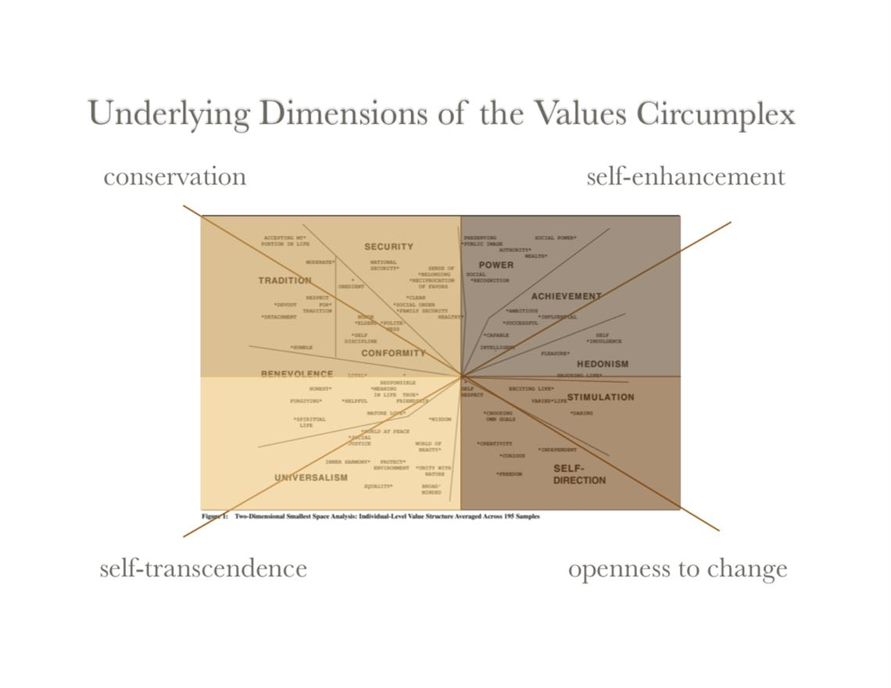
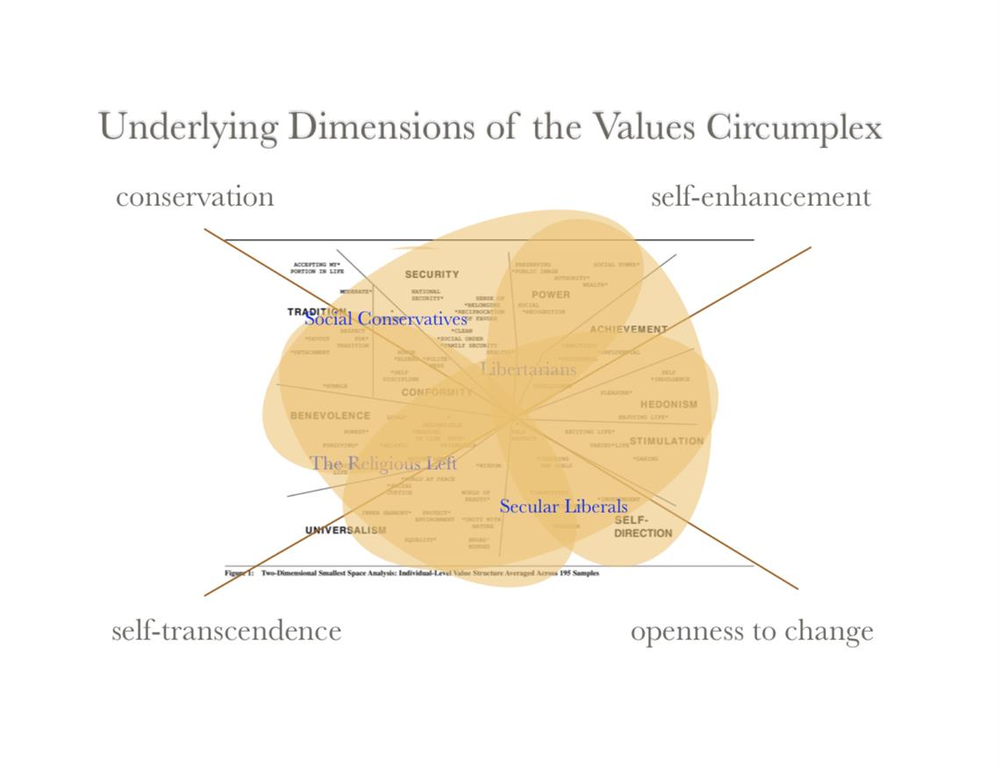
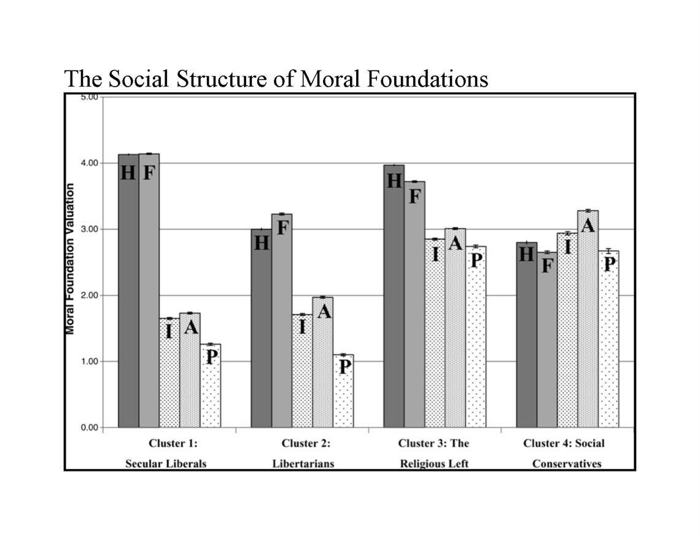

Lecture 1: Jan 4, 2018
What comes to mind when you think of good?
Moral Foundations Theory
Jonathan Haidt - developed a theory of what are the basic moral foundations. Most influential theory.
4 Basic Claims (need to be true for theory to make sense):
- Nativism - there's a first draft of the mental mind. In genetic heritage, it's already developing - a preparation. Our human mind is being organized to understand right and wrong. Prepared for adaptive social problems that we need to deal with. Readyness for being able to attend to these things and learn from them.Readyness to learn language. Language is so complex, but we're able to learn early on. We're not prepared to do a lot of tings, but we're prepared for language and to deal with social problems, so it must be important.Prepared for issues of morality must mean that it's important.
- Cultural Learning - first draft is edited in a specific culture. What is actually there can vary - culture, temperament, sensitivity to world, media, parental interactions, etc. Influences. Emphasizing some things more than othersCultures of honour - in southern US, but not in northern.
- Intuitionism - intuition comes first, strategic reasoning comes second. Social intuitionist model of morality - we have a gut feeling first then reason. Consensual activity in a couple, it's safe, they're both happy - they're brother and sister. It goes from nice to euk. Most people say immoral - why is it wrong? Because intuition says it's wrong.Cognitive brain - thinks through justifications of what we're feeling. Justify our feelings, emotioins. Instead of thinking "should I feel this way," well I do.
- Pluralism - there isn't just one adaptive problem/challenge, there are a number of recurrent issues/social challenges, so there are many moral foundations.
The "Big Three" of Morality (Schreider, Mark, etc.) - different frameworks
- Autonomy - Harm, rights, justice. Western North American framework. Is anybody getting hurt? Is it fair? If so, it's okay. Morality is based on harm, justice, and consent. That determines if it's moral or not.
- Community - Duty, hierarchy, interdependency. Group cohesiveness about others. Morality based on accountability to the group.
- Divinity - imposed order (sacred or natural), personal sanctity - not defiling yourself/others, suppression of base instincts. This is what's good or bad - this is the way things naturally are in place. Morally based on immutable. Higher/natural order.
Moral Foundations Theory (1-2: Individuating-Autonomy, 3-5: Binding, 3-4: Community, 5: Divinity)
- Harm/care (H) - basic concerns for the suffering of others, including virtues of caring and compassion. Want to raise infant until they can take care of themselves. How do we keep this going? Turtle moms lay eggs and leave- perfectly natural. How do we get a parent to not be a turtle parent? Bonding. Breastfeeding, sex - oxytocin. Chemicals. We've got it. Taking care of people.
- Fairness/reciprocity (P?) - concerns about unfair treatment, inequality and more abstract notions of justice. Is it fair or not.
- Ingroup/loyalty (I) - Concerns related to obligations of group membership, such as loyalty, self-sacrifice, and vigilance against betrayal. Being committed to your ingroup.
- Authority/Respect (A) - Concerns related to social order and the obligations of hierarchical relationships such as obedience, respect, and proper role fulfillment. Why want obedience? A child may not listen, go out, and do dumb stuff to get themselves killed.
- Purity/Sancitity (P) - Physical and spiritual contagion, including virtues of chastity, wholesomeness, and control of desires. Contamination, pathogens, disgust, "toxic." Symbolic. Offended by using flag to clean the toilet - desecration s. "it's a really good cloth"
Hitler's sweater - would you put on Hitler's sweater? "Ew, no. I'm gonna get Hitler on me!" Hitler-y
Additional Candidates - If principles are correct, there might be more foundations. It doesn't end with 5. Put out the criteria, and others came up with more. These are the ones that made it.
- Liberty/oppression - freedom
- Efficiency/waste - group - are you wasting our resources?
- Ownership/theft
- Industry/Laziness - contributing vs. not
- Modest(humility)/superiority - "I'm the best"
- Honesty/Deception (or trust betrayal) - trust is ground zero. Determining friend from foe.
What is "Good"?
It's a question of morality, but we're going to look at data.
Approach: understand its opposite - immoral
Two approaches (often conflicting):
- Domain-specific - There are different types of morality. Multiple dimensions/domains. Not one size fits all.Moral Foundations
- Domain-general - It's just one thing. One common ingredient. One basic rule. One framework to rule them all.dyadic Morality
Gray & Kennedy (2016) - Harm/impurity or severe/"weird"? Specific or general? Took some moral scenarios in Moral Foundations research. Harm scenarios and impurity scenarios. Asked: how much harm and how weird? Harm/impurity confounded with severe/weird. Harm scenarios have more severe consequences. Sever scenarios are just weird. Reactions to these scenarios - impure highly positively correlated with harm judgements. Same direction pretty closely. Talking about it distinct, but data ssays they're the same. Argument: Morality is one thing. Confound -> no clear support for moral foundations.
dyadic Morality (Gray, Waytz, Young) - Prototypic immoral behaviour is interpersonal harm.
Interpersonal harm: doing X or not will have Y outcome for a moral patient -> will harm some moral patient.
- "intentional moral agent"
- capacity for action (or inaction) - by acting or not acting, I can hurt you.
- capacity for foresight - foresee a certain outcome. Motivation. Intended consequencees. Did you see that coming? Foreseeability.
- "moral patient"
- capacity to experience adverse consequences - capacity to suffer physically or psychologically
- is suffering direct or indirect impact - can happen anywhere on the chain Environmental - if you harm the environment and it harms someone indirectly
dyadic Completion (Gray, Schein, Ward 2014) - if dyadic morality is right, then people will perceive harm happening. If moral judgements are relevant, they will see the harm. If you see an agent, you will see a patient on the other side. Reflex. harm is the default moral judgement.
"immoral" -> harm to an immoral patient
Research support:
- impure" scenarios + time pressure -> victims - were there any victims? Time pressure -> more likely to say there were victims (moral patient). Intuition. Strongest under time pressure. An immoral situation -> harm is relevant (default moral situation)
- "impure" scenarios (titles) + idiograms (chinese characters) -> idiograms = harm - asked whether or not they thought the idiograms represented harm. Titles with impure scenarios, people were more likely to interpret idograms with harm. Automatic reaction that impurity means harm.
- impure as wrong -> higher pain estimates - judged how wrong actions were. Some were accident scenarios. The more impure, the more pain they estimated.
- impure or harm scenarios -> children's faces as suffering - impure/harm scenarios caused people to judge children's faces as suffering. Kicks up cognitive associations of harm. Suffering is the default. Harm script. Harm is default.
There's harm, but where's the harm? Asked if it was agent (self), patient, or society? People were given lots of time to think and respond - is this really what they think? Problem: retrospective (not automatic). Common response: "I didn't need to see that" by the perceive.
Alternative (never been tested): perceiver (judge) as the victim/patient. Harm is the nastiness. Experiencing themselves as being harmed. Is moral judge the victim by being exposed to this stuff? What they did made me feel this way. Disgust sensitive - more extreme judgements across different domains. Other emotions - same thing. More sensitive - go off and vomit. More reactive -> more intense.
Lecture 2: Jan 11, 2018
Most of Grey's stuff focuses on negative moral judgements - a theory of immoral behaviour, violations that make people react. If we understand immorality, it gives understanding of morality.
"Quasi-goodness"
typical harm-causing agent (all of us): "I'm good (enough)" Most of us are going ot insist that we're good people or at least that we're good enough. Doing that in the aftermath of intentionally harming someone. And we continue insisting that we're good. But how do we do that? How do we see ourselves as good?
How?
Menu of options: (1-3) focus on I'm good (4) I'm not that good, but I'm no worse than you. (5) I'm bad, that's fine.
- deny action, foresight, or intention - Deny action - I didn't do it. It wasn't me. Denying responsibility. Deny foresight - yeah, I did it. I didn't mean to. It was an accident. Deny that you were an intentional moral agent. I didn't know that would happen. Trying to take away own status. Won't work if security camera.
- Deny or minimize the harm inflicted - it wasn't that bad. Walk it off, baby. Denying the impact on the victim. Dementalization - turning moral patient into an object. "Fish can't feel pain." Taking away the pain experience from a potential moral victim - then they're not moral victims anymore. Outgroups - outgroup members are seen as feeling less, having less capacity for suffering. They're not like us. Trying to take away victim's status. "Well, you still got one arm." - won't work here.
- Justify harm - yes, harm happened - I did it, but there are good reasons why that happened. We develop consciousness to justify our behaviour. "It was for a greater good." Appeal to a higher good. "They deserved it." - this was justice/revenge. They started it. They made me a moral patient. Might not work if it's too nasty.
- OR
- Normalize harm - Yes, I did it and you would too if you were in my situation. I'm not perfect, but neither are you. You've done the same thing. I remember when you did something worse, you're a hypocrite. How dare you condemn me?! Turning the whole episode back onto the judge. The message: you have no right to judge me because if you condemn me, you condemn yourself.
- Assert one's personal power - haters gonna hate. It doesn't matter. Your judgements can't really hurt me. Nullifies judges power. You can think I'm bad, but this doesn't hurt me. Takes the power away from the judge.
Why?
Humans have a need to belong. We are a social spieces. We need to be part of a group. That need for belonging got hardwired into us because it makes survival sense - we were able to learn to cooperate and work in groups to hunt and defend ourselves. If you're by yourself, you're screwed. We have a deep-seeded need to feel as though we're part of a group. We don't have to be good, we just have to be good enough. We don't have to be good enough, we just have to be not so bad that we don't get rejected. When people are ostracized, the same parts of the brain light up as with when people experience physical pain. Social rejectionis physically painful. Sets up a powerful motive.
intentional harm + "unjustifiable"
"immoral" ----------> "EVIL"
"EVIL" = ultimate signifier of social rejection.
When we engage in intentional harm. Intentional harm is considered as immoral. If we can't justify that intentional harm? We're not able to make it okay with the group. We call it Evil. Evil is intentional, unjustifiable harm. Evil is the ultimate signifier of social rejection. Once a person os labelled evil, that means you're beyond the group, you're excluded/outside. "The Mark of Cain" - Cain killed his brother - you're gonna lose everything - I'm gonna mark you so no one can kill you - My punishment is greater than I can bear. (bigfoot) You're beyond acceptance. You are targeted for rejection. When we're busted, we go into damage control. We want to get away from this sense of panic, shame, and pain that's associated with social rejection.
"Real" good
"intentional moral agent"
"moral patient" with the capacity to experience beneficial consequences
Replacing capacity to suffer capacity to benefit. These are morally approved behaviours. Includes mentalizing - you want to enhance the patient's experience. Findhorn - Scotland - Very green. Backstory - founders had visions and communicated with the nature spirits. Told them what they neeeded to do to plant things. Divas. Attributing the capacity for experience to these plants.
"Greatest" good
"unjustifiable" = no self benefits... only self costs? intentional unjustifiable benefit. Unjustifiable - There's no obvious benefits to the self. No benefits, maybe even be costly to the self. Doing that just cause it benefits the other.
How common, rare or illusory? Does altruistic motivation exist? Cialdini: no. Bats: yes, not common, but it exists. The more extreme the example, the more likely it is that people look at it and say it's something special. Heroes, saints, martyrs. Extreme acts are celebrated. Altruistic love is what is celebrated as being the highest - focus is on benefiting the other.
Recap: try to understand what is good? Got various moral frameworks, perspectives. There are still other pieces.
Core Virtues
(Dahlsgaard, Peterson, and Seligman 2005) - framework. philosophical, religious traditions. Tried to identify the core virtues. virtues - people who do good a lot of time. Virtuous - promoting the good.
- Humanity - interpersonal strength sthat involve tending/befriending others. Love and kindness. The care foundation. (Caring vs. harming)
- Justice - Civic strengths that underly healthy community life. Interpersonal. Leadership, citizenship, teamwork. Fairness theme, but in a community context.
- Courage - emotional strengths. People somehow display these things (bravery, perseverance). We value these traits. Exercising the will to accomplish goals in the face of opposition. 1. certain level of strong self-regulation. I have the act of the will. I am overpowering the opposition through my own strength of character. I am resisting temptation. I am going beyond my own constraints.
- Temperance - strengths that protect against excess. Humility, prudence (being careful), self-control. Another act of the will. Resisting temptation in a different way. Desire to take more than you deserve/need. Gluttony. Not being able to regulate your own intake. Greed. Putting the brakes on yourself.
- Wisdom - the acquisition and use of knowledge. Creativity, curiosity, judgement, providing counsel. I have these abilities and I am using them to benefit others.
- Transcendence - Strengths that forge connections to the larger universe and provide meaning. Hope, spirituality. Going beyond yourself, going beyond something that's bigger than you.
A lot of similar concepts that fit will in the big picture. There doesn't seem to be a 1 to 1 correspondence. Massive world traditions - we can see common themes - themes look at what is good.
Model of Moral Motives
(Janoff-Bulman & Carnes (2013)) Another framework. This starts to tie into ideas of how you do good.
|
SELF (personal) |
OTHER (interpersonal) |
GROUP (collective) |
| Defense/inhibitation/Protect (proscriptive regulation) |
self-restraint/moderation |
not harming |
social order/communal solidarity |
| Appetitive/Activation/Provide (prescriptive regulation) |
industriousness |
helping/fairness |
social justice/communal responsibility |
There are two motivational directions that are common across all kinds of psychological processes. Amoebic self-theory - comparing human sense of self and amoeba - suggested that there are two goals that all living creatures have - has to protect itself against things that could cause it harm. Two ways to do this - keep things from getting at you or if things got at you, you need to expel them. Sounds like avoidance - defence, inhibition, protection, regulation. It's all about protection. The other thing is to acquire those things that benefit them - acquisitional motivation. Getting, taking, acquiring, moving towards/approaching/obtaining those things that benefit us. Movement towards or away. We respond to them in certain ways. Eat, retreat and excrete (rhyming triplet). How does this fit into moral? These occur at various levels. Level of individual, interpersonal, and group.
- SELF (personal)
- self-restraint/moderation - Moral base - thou shall not. To be a good person, you shouldn't do this. For the inidividual to not harm themselves, they have to self restrain and moderation. Virtue of temperance. Not taking in more than you need, too much.
- industriousness - it's what you do, not what you don't do. Conscientiousness. Working hard. Being responsible. Making sure you take care of yourself. Being healthy. Getting exercise. Morally self-benefiting behaviours. They're all about the self (questionable), certainly doesn't hurt the self.
- OTHER (interpersonal)
- not harming - you should not hurt others. You should not be unfair to others, cheat.belittle/ignore. You shouldn't do things that will hurt other people.
- helping/fairness - Treating them with respect/dignity. Caring for someone, looking after their needs. Active version of being good.
- GROUP (collective)
- social order/communal solidarity - you should not cause trouble in society. You sshouldn't disrupt the social order. You should stick together, work together. Shouldn't betray people. Shouldn't take more than your share. Shouldn't do in order for the group to function well.
- social justice/communal responsibility. A matter of improving social order. Equality, bettering people.
Moral foundations theory only ties into some of these things. Individualizing - harm, care, fairness are there at the interpersonal level (giant individualizing banner on to of OTHER column). Inidividualizing is capture at the interpersonal level. Could argue that it's not limited at that level. That interpersonal level is being taking care of. Part of the group level is being taking care of by BINDING (binding banner on top of Group + defense) - you're supposed to respect authority, protect the collective, be true to your group. This whole other group level/MF hasn't be addressed. Haidt - suggested that psychologists have ignored conservative thinking. WE're not creating an environment that is inclusive. Liberals only focus on individualizing. Conservatives focus on individualizing and group. Janoff-Bulman said Haidt has missed social justice - liberal ideology are focused on the group but focused in a different way - concerned with equality, not discriminating. Social justice is a group level moral foundation.
Values and Core Motives
Schwartz (1992) values theory as a foundation for identify core motives underlying morality.
Values: trans-situational goals that vary in importance and serve as guiding principles.
He is using the language of goals. Goals implies motivation. He's looking at identifying transituational goals that people are motivated to obtain. The things we want to get at the most. Motives are important.
Developed using a bottom-up process Parellels the work done when mapping the human genome. Everybody working together to map this complex thing, once it's done we can really start to move forward. First, sent out a blank page to thousands of people. Asked people: what do you value? A lot of information. Hypothesized correctly that he would see a lot of overlapped. Came from over 30 countries. Not limited to one group. TRied to identify human values. What cuts across cultural groups? What is it that we all share? got it down to 62 values. Make a scale, hand it out to people. Everyone rates it on a scale from 0 to 11. The whole scale doesn't get used most of the time. 30k people. Most people use a small scale (8,9,10). They're values, of course you're going to value them. Question is: which you put at 6-10.
Schwartz's Values Circumplex. Methodology: Smallest spaces analysis. See where things cluster. I value honesty, also very likely to say I value being forgiven. If you highly value social power, also wealth, authority, preserving public image. Center point: weighted average of the distances. Critical point: the analysis itself tells you how many dimensions you need to capture the variation in your data. Could've been one dimension (1 line), etc. Ended up being 2D tells us that as human beings, our values can be framed along two dimensions.

First dimension: diagonal. one end: Tradition, devout, moderate, conformity, obedient, elders, self-discipline - package of things, security, belonging, social order, benevolence, loyalty, responsible. The other end: being independent, curious, freedom, daring, exciting life, self-direction, Could have chosen to put this line anywhere. 1 end: conservation, other end: openness to change. When you look at conservation: keeping things safe, stable, non-threatening, familiar, protected. Openness to change: change, alteration, new, excitement, not stable/safe, risky, new things coming in, things you've never experienced before, acquiring. Captures one key set of human beliefs: same theme as Janet-Bulman
Why is it two dimensions and not one? Whatever that dimension is, it's as important to us as appetite and defense. There's something else that matters to us at that level. Other diagonal. 2nd dimension: 1 end (top right): Social power, ambition, self indulgence, success, authority, public image. Other end: inner harmony, social justice, protecting environment, equality, wisdom, openmindedness. People who choose one, will be unlikely to choose the other end. top right: self-enhancement - benefiting the self, other end: self-transendence - benefiting beyond the self. This is actually the dimension of morality. It's a social dimension of dominance vs. equality. Competition vs. cooperation. Fundamentally social. Values don't make sense if we don't put people in the equation. the 2nd set of values is a set of social values - you have poeople who prioritize their own wellbeing, and others prioritizing the wellbeing of what's beyond themselves. They're all good in and of themselves, it's a matter of prioritizing. Self-enhancement: my own needs, wellbeing will come first. Self-transendence- no, the wellbeing of others matters just as much, maybe even more.
This is something that thousands of people have told us. Key: how we relate to others.

Looked online-collected data - moral foundations questionnaire. Lots of people online can fill it out. See if certain consistent clusters emerge. You end up with four groups/patterns that reflect the way in which people respond. The social Structure of Moral Foundations - graph. H - harm. F - fairness. I - ingroup. A - authority. P - purity/sanctity. Peolpe's averages. 4 clustes - labels of what these people look like (demographics). Distinguishing between individualizing vs. binding group. Harm/fairness, binding are the others. 3 of 4 groups, inidividualizing are pripriritized. In the one group, they're all equal. Cluster 1 + 4 - Secular Liberals (not religious) and Social Conservatives. Secular Liberals - is it fair and is anyone getting hurt? Fair, then it's moral. Social Conservatives - all 5 at same level - not prioritizing one framework over the other - some say good - diversifying, some say ehh. Two groups don't get along. Cluster 2 + 3 - Libertarians - harm+fairness are higher than binding, but h/f not a heck of a lot higher than conservatives, binding not a heck of a lot higher than secular - lowest of the low - extreme individualism - self-direction - leave me alone and let me do whatever I want (Tea party). Religous LEft - as high as liberals on individ, as high as conservatives on binding. Individ still a lot higher. Recognize value in all of them, but will prioritize one over the other.

When you look at their value systems. Social Conservatives - conservation end, (moral frameworks run self-trascendence, self-enhancement direction), find people on both sides. Not one kind of moral brand. Secular liberals - on openness to change end, some take universalist/benevolent approach, some are self-service. Religious left - on self-trasendence - across conservation and openness to change - thick morality. Libtertarianism - thin moral framework - on self-direction to self-enhancement. We can map a couple of these things onto each other.
Putting it all together
self enhancement vs. self-transcendence is the "moral" dimension - to be moral is to prioritize the well-being of that which is beyond the self rather than prioritizing the well-being of the self. To be immoral is to prioritize the well-being of the self at the expense of things beyond the self. This is how we're defining good - it has to do with prioritizing.
Many foundations or One foundation to rule them all?
YES!
Two preliminary theoretical modifications:
- prioritization - The idea of prioritization is distinct from the degree of harm - not: is it designed to feel good or harm, its: which is prioritized? $20 - distribute. They keep 60%, give you the rest. You're saying it's immoral even though you gained something. They could've given you nothing. It doesn't feel good because they prioritized themselves. It was good, but it wasn't good enough. It's about perception of harm. It's not necessarily harm, it's just a relative harm.
- potential - rather than talking about harm or benefit, it's useful/accurate to talk about the potential for harm/benefit. Threat vs. opportunity. Imagine driving home at night. I'm gonna drive home on the wrong side of the road. If you succeed, nobody got hurt. Nothing happened. It's all good. Was your action moral? No, because you increased the risk that other people would be harmed, injured, killed. Unnecessarily putting somebody at risk is immoral. The idea of potential of risk.
Different levels of analysis - example in another field. Emotional theorists have argued that we experience emotions as a way to alert us to changes in the environment. We feel different things - fear -> threatening, disgust -> expulsion, joy. Despite all of these emotions, they are basically all focused on two goals: either designed to protect you to avoid danger, or to benefit you in terms of acquisitions and satiating your appetite. They're working together. We have many emotions organized with two basic motives. Physics vs. Chemistry - one looks at the building blocks (how do they fit together and work together). It's not either or.
Moral foundations emerge as a response to distinct evolutionary challenges. Challenges can be varied - taking care of infants, fairness + reciprocity, etc. Challenges are there and we have different moral foundations. But they are all organized over the same two fundamental goals: is this harming or is this benefiting? When it gets crossed with our social nature, it becomes morals. Morality only exists in the social world. We're responding to the environment by these environmental threats. Big picture: harm + benefits, all focused on prioritizing yourself or somebody else? Who do we put first, rest is what is our goal?
Why is "good"?
What can Empathy mean? It gets a lot of different meanings attached to it.
| Emotional Contagion |
Perspective-taking |
Empathic Concern |
most basic
often not prosocial
|
other as moral patient effortful not always accurate sometimes prosocial |
self & other distinct often prosocial* can fuel altruistic motivation |
At least 3 distinct uses (people have to be more precise now):
- Emotional contagion (or sharing) - "feeling as" Feeling what another feels.
- most basic - non-human spieces can do it, young infants can do it. fairly automatic process. neurological level - same areas light up in perceiver and target, the brains are doing the same things.
- often not prosocial - if emotional contagion involves sharing of negative emotions, that doesn't feel good. then the focus of attention is trying to make yourself feel better. If the only way to make yourself feel better, ok then I'll do it, but you could escape or intervene.
- Perspective-taking - imagining. Cognitive empathy. Not feeling the same thing, not necessarily even feeling anything. Trying to get inside their head and trying to imagine what they feel. Imagining what the other is thinking, feeling, wanting, etc. Very cognitive. Not necessarily driven by emotion or resulting in emotion.
- other as moral patient - they have the capacity for experience. Unless there is a mind to get into, perspective taking isn't meaningful.
- Effortful. It takes work to understand what the world looks like with another perspective.
- Not always accurate.
- Sometimes prosocial - Just because I don't care, doesn't mean I don't understand." - depending on the perceivers goals, perspective taking can jumpstart prosocial behaviour or I know exactly what your weaknesses are - I can make your life effin' miserable. The same PT ability can have prosocial behaviour or antisocial behaviour. If you really get their vulnerabilities, you can address them and make them better or make them worse. Sadists engage in PT.
- Empathic concern - "feeling for" - sympathy, compassion. You do not have to experience their emotion, you feel for them for feeling that emotion
- self & other distinct - you sometimes lose the distinction between the self and other. You're terrified, I'm terrified, I'm focused on my terrified. Concern: you're not feeling as, you're feeling for. The self and other are seen as distinct. Not necessarily feeling as they are feeling.
- Often prosocial* - limits.
- Can fuel altruistic motivation - If you think altruistic motivation exists, then empathic concern is the engine behind altruistic motivation - prosocial behaviour is toward benefiting the other as an end in itself. Not for yourself, but because you want to help the other. Manipulated with escape - it's difficult escape or easy escape. Personal distress - if people have an easy escape, they'll tkae it. They'll only reduce their distress if they can't get out of there. It may be prosocial, but your goal is so you won't feel like crap anymore. Empathic concern predicts the same amount of helping regardless of ease of escape. "You're really concerned with this person's welfare" - you could weasel out, but you're hanging in there.
Is "empathy" automatic or controllable?
"Yes" (Zaki, 2014)
- Evidence of automaticity: mimicry, neural resonance - there's a natural kind of mimicry that happens - we adopt similar postures, facial expressions (even video clip). Neurological level - similar areas of the brain light up. Even when people are not instructed to engage in mimicry, even when under cognitive load. Lots of evidence that suggests that to some degree, it's automatic.
- Evidence of controllability: ingroup/outgroup, doctor/patient. Show that if you observe an individual in pain or discomfort, but they're an outgroup member. You don't get the automatic neural activity that's emotional contagion. People can shut it down. Doctors that have to perform uncomfortable procedures - they can shut it down beforehand.
Yes, we see both of those pieces going on.
How do people regulate "empathy"?
PT is effortful, so that's controllable. How do people regulate the automatic stuff?
3 things they can do: (a time sequence - before, during, after)
- situation selection - people can engage in situation selection. They're gonna go there or not even. "Why'd you watch a sad movie?" "I just needed a good cry" People seek it out where they can empathize with the characters. They're selecting that situation. Alternatively, if we see someone panhandling and we know if we walk past we're gonna get hit up, we cross the street M-mm, not gonna go there - sidesteeping the situation - avoiding it.
Most proactive. There is a possibility that my empathy system might get activitated. I'm going to go ahead and move into that situation or I'm not going to go there.
- attention modulation - you can't always be proactive, can't always avoid situations. What do you do once you're in there? There's a lot going on, you can pay more attention to some things than other things. If you don't want empathy spoiling your day, you can get rid of empathy by not focusing on the other person's emotions. Amp up PT, or try to remain detached - focus on anything but what the person's feeling.
People can attend to the emotions of the person or everything but the emotions of the person. If you're paying attention to what they're feeling, you're amping up the likelihood of the empathy. If you don't wanna go there, you don't pay attention. If you're watching somebody, they're getting electric shocks - think about what they're feeling vs. don't think about them - stay detached.
- appraisal - trying to make sense out of the target's reactions. What's the person really feeling? How much are they really feeling? Why do they feel this way? They may be suffering, but it may be because they are dumbshits. Why should I empathize with someone woh's stupid. What impact should this person's reaction have on me? Depending on our appraisal, yep I'm gonna go there or nope, you forfeited that note cause you're an idiot.
they're in some kind of need, in distress - what does that mean to me? Is it a good reason, is it unfair? What impact should that have on me? Whether or not I have any role - do I want to be involved in that? Look, they feel bad but they're a dumbass, so you disengage.
Lecture 3: Jan 18, 2018
Test 1: 50 questions. 5 items per reading. 20 of 50 are reading-based. 30 are lecture based - a bit of overlap. 55 minutes-hour.
Last time: why is good? Empathy. distinctions undereneath it. Empathy - automatic or controllable? Yes. Both. People can regulate those automatized reactions.
How do people regulate? 3 strategies: Time sequence.
Why regulate empathy?
Avoidance goals and approach goals
Avoidance Goals - shut down empathy. why wouldn't we want to react with other people's feelings? Why would we want to shut down empathy?
- pain - (experiential) if we see someone suffering, "willy nilly". If we feel what they're feeling and they're suffering, we're going to suffer too. You feel like shit, I'm gonna feel like shit and I don't wanna feel like shit. Avoid ones own discomfort.
- costs - (practical) experiencing empathy for someone is costly. Practical aspect. If we feel empathy for someone, and we feel bad for them, we are now emotionally on the hook and feel like we need to do something. That may be inconvenient. It may take time, money, emotional energy, a lot of stuff to help their hurt stop hurting. Once we get hooked in, we're gonna wanna do that and we're gonna feel like crap if we don't. We know how empathy works. I'm a sucker for _____.
- interference with competition (practical, interpersonal) - context of competing with others for a desired goal - same goal or in direct conflict. If you're up against someone, and they feel bad, and you're trying to win, and you stop to say sorry, you can lose your edge. Losing something. Soldier in a combat situation. Wow, the enemies must be so scared right now, I just feel so bad for them. Military training - focus on not feeling. Framing enemy in dehumanized fashion. If they feel empathy, that is going to make them vulnerable. Knorath, O'Brien & Hsing (2011) - Dispositional empathy scores (Davis') - tracking over 20 year period of undergrad students. During 20 year span, dispositional empathy scores dropped. 2 driving the drop - perspective taking and empathic concern - the two most relevant to prosocial behaviour. Why? Possibilities: desensitized, compassion, growth of population, individualistic - we don't know for sure. Scores on narcissism went up - self-focus. Could it be linked to individual-oriented goal attainment? Increase of people wanting to become famous. Being famous or being respected -> being famous. If so, where does the increase come from?
Approach Goals - upgrading empathy. Letting empathy happen. Seeking out empathic sequence. Why would we want to feel others' feelings and respond to them?
- positive affect - if we see somebody else is all happy, and we let our empathy system switch on, we can feel their happiness. We become joy vampires. If I want to feel happier, I surround myself with happy people. Suck it up. Payoff.
- affiliation - being empathic towards others can strengthen social connections with them. People often appreciate being empathized with. If we see them as desirable in some way, empathy can facilitate the bonding process. Especially if people feel socially isolated, they can be more motivated to switch on the empathy process. This can be a tool for helping us forge connections with other people.
- desirability - a lot of people consider being empathic to be a sociable quality. I didn't have to get my PhD through the mail order to know this: would you rather your friend be empathic or unempathic? I 'spect, everyone will go with empathic. Empathic people are seen as nicer.
Burris, Schrage, & Rempel (2016) -
2 studies: Men read about man coping with buddy's death. Two guys fishing on a boat, trying to swim back, buddy started fading, guy who survived was a stronger swimmer, tried to swim for both, buddy said sacrificed himself.
Reading it a paragraph at a time. Prior to every new paragraph appearing, they got a subliminal prime (something that flashed while reading) - 20ms. Decode meanings of sentences without knowing we saw a sentence.
Randomly assigned: neutral prime ("People are walking"), "girly men care (1st study)/caring is weakness (2nd study)", "real men care/caring is strength".
They completed bin sexual inventory - stereotypical masculine traits. One subscale - Instrumentality/agency - measure of "can do" masculinity. "I'm the kind of guy that can git 'er dunn."
Literature: Masculine and hyper masculine men are empathy impaired. Wondering whether if that was the case or was it the case that they were capable, but needed to be given permission - desirability. Who cares? Real men care. Will that make a difference? Yes.
Can do masculinity predicted greater empathic concern for the story. For neutral and girly men care, they functioned in the same way - masculine men, if anything, are going to be less likely to report empathy. When give them the permission-giving prime, the more masculine men say they do care. Were they bullshitting?
Another measure: ;2nd study - asked afterwards - if you were in the survivor's position, how would you deal with this in the aftermath? Negative coping - drink away sorrows or positive coping - I did the best I could, spend time with friends, be grateful.
And it predicted positive coping. "Real men care" -> "can do masculinity" -> empathic concern -> positive coping. Positive emotions make us more receptive to positive coping. Predicting positive coping - then that suggests that they were really feeling.
Approach motive - desiribility - if they think that empathic concern is a positive characteristic, and makes them more of a man, then they're willing to open up and do that.
They're not empathy impaired, they're empathy constrained.
Got this with a 20ms prime - a message they could not consciously report having read. Turned them into Dove men.
Massive message of men - it's not about ability, it's about permission. Men being able to understand that this is congruent with a masculine identity. That caring can be an expression of strength, not an expression of weakness.
Traditional feminitinity - emotion focus - more empathic people, primes didn't matter. they were already doing it.
Another possible cost: "Empathy" can be immoral?!
Bloom(2017): the identifiable victim effect - possibility that empathy can be immoral. Empathy works like a spotlight. Particularistic focus. When empathy is switched on, you have one particular target in mind and that individual is lit up. Everything else is in the outer darkenss and can go to hell, for all we care. he gives a number of worse case examples. There are limits to it. It can set up immoral-seeming outcomes
Worst case examples:
- Under some circumstances, empathy can be unfair. Organ donation list. There are set rules. One of the people came into your office and fell apart in front of you. What you do is bump them up the list. Your heart goes out to them. You're helping that person. But other people are being bumped down the list. You're doing good, but you're doing good to this one. You're being unfair to others. Other people are being disadvantaged. Moral dilemmas. You will save that 1 life at the expense of 10 others. Spotlight idea. Focus on the one can lead to help for the one and hurt the many -> immoral.
- What if there is a need, but there is no clear identifiable victim. Something like climate change, an abstraction. Our empathy system is really crappy for situations like that. There's no clear identifiable victim. Nothing for our brains to attach to and feel for. There could be massive harm pending, but if we can't focus on it, our empathy system is just spinning its wheels doing nothing. Starving polar bear. People went bear-shit over. It was a picture of one. Identifiable victim. System isn't designed for it.
- If you see someone being victimized, but you're not immobilized, you may be pissed. You may want to harm the harmers. Empathy can fuel vigilantism. I wanna go after whoever is causing the harm. That can get morally murky. We're justice.
Is there a workaround?
- First, develop a rational action plan. Think in terms of cost-benefit, moral principles.
- Then, switch on empathy.
(really..?) It's a bit unrealistic. It assumes we're self-aware. Looks good on paper. Probably a lot more difficult to manage in that respect. In part because of our automaticity. If we are hardwired to experience empathy, then already it's taking effort to shut it down.
An alternative emotion: Elevation (Haidt, 2003; Thomson & Siegel, 2017)
The other end of disgust. What's our reaction if we see people doing stuff morally awesome? Elevation is the opposite of "moral disgust". Meta-empathy - you're observing empathy in someone else.
When you learn of (big) prosocial acts...
- FEEL: warm, moved, touched, inspired. Warm, moved, touched very similar to empathic concern. Elevation adds something different - the sense of feeling inspired. Physiological sensations: warm and chills at the same thing, crying.
- THINK: "hope for humanity". You have restored my faith in humanity. We don't completely suck. We've got a chance.
- Want to: be a better person. I want to engage in prosocial acts, connect with others,.
Translates to behaviour. Induce elevation state, helping opportunity. Pretty encouraging. Powerful thing.
A variety of prosocial outcomes linked to elevation:
- More cooperative workplace attitudes,
- Reduced prejudice based on sexual orientation
- Lead to greater endorsement of pro-green products
- Increase organ-donation registration
- Self-care. People with clinical depression - I'm going to go get help. People are more receptive to therapy.
How does it work? Mechanisms:
- Physiological: oxytocin? Links to a sense of trusting/feeling safe. No research has found direct evidence that elevation releases oxytocin. Nurisng mothers. Exposure to elevation - increase lactating.Experience of elevation is associated with dual activation of the autonomic and sympathic nervous systems - consistent with oxytocin release Suggestive evidence only.
- Cognitive: reduced threat, oneness. When we see an elevation-inducing experience - what is it we're seeing? We're seieng someone we don't know being nice to somebody else. We feel safer. Parrot: "'I'm gonna get you!!" "It's alright, it's all sweet" It's alright, it's all sweet. We feel safer somehow. Luxury experience. If you're in a red alert state, not necessarily gonna be feeling inspired.
-
Individual differences: People that are more likely to seek out/receptive to elevation experiences are more likely to be moved by them. People at the low end are going to be irritated/roll their eyes. "What a shmuck." "What a waste of time and energy." People who are not open to elevation experiences, they're not going to have the experience. Some people seek out elevation experiences - Animal rescue videos.
Evolution of Empathy
Looking at the relational context of empathy. Focus on the evolution of empathy, links to relational context. Moral dyad - relational connection.
Evolution has selected us to have these empathic processes. They exist because they are of some evolutionary value to us. Empathy exists because it promotes genetic propagation (fundamental goal). If we are going to continue on, we need genetic propagation. Reproduction is central to evolutionary theory. The primary relational unit - the family. Parents and child. Evolution of empathy has its root in the family unit. Family unit is embedded within a community - kinfolk and beyond.
Expand to community context. Humans are social. We work very well together. We're vulnerable as individuals. Other species can get us. We're not big, fast, etc. You won't win unless you have a weapon. We got where we are not because of our individual skills, but because we walked together. Being socially connected is a very adaptive ability for us. If we could work together, we could protect each other, hunt in groups, coordinate our activities. If many of us, against one of them, we stand a much better chance. In the process of working together, wouldn't it be valuable if there was some prosocial process that allowed us cooperate. We're also going to compete. If working together is adaptive, we have to have mechanisms to foster it. Genetic diversity - we are aware that genetic diversity is important - a lot of different adaptive abilities. If you don't cross out beyond the family unit, negative effects. Coordinate and work together. Things go beyond the family unit out to a broader community that we connect with.
Family Context - we still have to recognize that the family is the basic unit that is going to nurture and care for the offspring. The community will be less invested in the succesful reproduction and nurturing of children. Reproduction isn't successful until your offspring can/do reproduce. If your offspring die before they reproduce, you still haven't done anything. This is a lengthy process. Not the case where other mammals are ready to go. This is an extensive, extended process requiring a lot of time, energy, investment. The mechanism that allows us to cooperate, needs to be more effective within our family relationships - much more of a coordinated effort. Mothers with young children have been extrememly vulnerable. They cna't leave children alone for extended amount of time. Infants are pathetic at taking care of themselves - true concept of hopeless. Hopeless and helpeless. They cannot survive on their own. "Go take care of yourself Be happy, oh, little newborn." "Can't roll over, can't get food, can't get etc. They can't do squat. Hell, they for sure can't do squats." Taking care of human babies is work. In terms of threat, harder to get away from. The fathers. It helps if don't have to do it alone. Efficient - is to have the father, because they have an investment. On average, they are heavily invested in the wellbeing of the offspring - it's their genetic material. Men can get away with cheating. Women cheating on men - wanted control on whose offspring it was - no birth control back then. If it's not yours, you're less invested in it. Fathers - first natural recourse - likely ot hang around.
Pair Bonding context - parent/parent - we are oriented towards forming long-term pairbonding mating relationships - on average monogamous. Much more monogamous than other species. Relationships scientists have argued that pair bonding - romantic love - is a commitment device to promote long-term pair bonding. Across child bearing time. Pair bonding is a universal human goal. If this is the case, there must be some mechanism in place to promote this. Sexual system - reproductive process - 2 things help keep men around (regular sexual activity): 1) hidden ovulation - some species give off clear signals that they're ovulating "I'm ready", human beings are not so quite dramatic, you never know. When it comes to sexual activity,it's not once amonth "Ok, we're done." - let's jsut keep trying. Nothing to say now, and not then. Ensured by regular sexual activity. For human beings, a pleasurable activity. Very rewarding. 2) Female orgasm - not that common in other species. Multiple and for longer. It's more than fun. It has strong bonding properties.
Two different sexual reward systems: 1) activates dopamine system - when we are starting to get aroused, anticipation of sexual activity. desire. 2) consumatory reward system - not just for sex. You're hungry, haven't eaten. You've got a great meal planned. You're also feeling that anticipation. That's gonna be good. I can smell it, that juicy steak. Then you eat it and you enjoy it. You sit back, relax, sigh, that was good. Release prior to orgasm and following orgasm - powerful opioids - make people feel relaxed, good, satisfied - a drug of choice.
Other thing that's released is oxytocin. Associated with trust, bonding.
Not just feeling good, it's drawing closer to the other person. Porn industry. Pornotopia version. Men spread their seed and have no responsibility. To have that be a non-bonding message, they have to be demeaning. If you read comments of a video clip and the titles " Bitch takesit up the ass" How heart warming and bonding is that? That's about to overcome that natural tendency to connect. Connect is inherent in the process, we have to actively disengage. "Pussy gets nailed." - something cruel to a cat. That's about disconnecting and you have to work overtime to do it because that's not the natural thing. One other thing going on: empathic connection. Part of the oxytocin, relationship, romantic love, pair bonding process - how effective would this be if you didn't care about each other? If you weren't invested in the other's well-being. There has to be a sense of meeting other people's needs. Promoting and preserving the well-being of the other target. Strongest mechanism: some kind of empathic system. You have to transcend yourself and care about the other persona nd there needs to be something to get you there. If you don't have that, you end up with a psychopath - they don't feel for other people, therefore they don't care about them.
caregiver-child context - the other parth of the family unit. The parent-child relationship is likely to be one o fthe key evolutionary foundations of empathy. Attachment Theory - multiple overlapping systems. 3 systems: sexual system, caregiving system, and attachment system. Caregiving system hasn't received as much attention. If we are going to parent an infant, invest all the time and energy - it was going to happen - there's gotta be something in the parent that says "oh we gotta take care of it." They don't have the baby, toss it somewhere. Oh, offspring. I want to nurture this, until it doesn't need nurturing anymore. There should be a system that has devleoped. It's there to prime parents to care for their offspring. Evidence: mothers - breastfeeding - releases a lot of oxytocin - it compels mothers to want to connect emotionally with their children, want to nurture them.
Reading - oxytocin - for people who don't want to form a relationship with somebody, oxytocin release is associated with distancing. It cna be bonding if you feel it's not an aversive scenario. It can also amplify your pushing away. Possible: Maybe it amplifies whatever treajectory you already have - it makes what you want to do stronger. Alternative: it isn't that it isn't working, that in addition, certain people are blocking it. Oxytocin may always be a bonding hormone, it will alway screate closeness. But if people don't want closeness, that pull for closeness will lead them to resist more strongly. If I'm feeling this thing and I don't wanna feel this thing, I'm gonna shut it down. You have to work really hard to shut it down.
Testosterone among men. When men become fathers, testosterone drops. Testosterone associated with masculinity, dominance, aggression. All of this dominance/aggression which isn't useful as a parent -> testosterone levels drop because that would be helpful in this relational context. If we want fathers to get involved with their infants, don't need to push them, just give them permission - tell them it's good. Simply caring about them, everybody wins. Both for mothers and fathers, there's evidenc ethat this caregiver child context is also one in which empathic connection with a child is going to be promoted because this would benefit the survival of the child.
It goes the other direction too: Attachment system - the child bonding with the caregiver. Healthy attachment system - oriented around security. In the process, children will develop an affection and concern for their parents. Not because they need them. At 8 months, there's a strong connection. Smiling, hugging, delight. Children signal "I care about you". Empathic concern is nurtuting.
Empathic Development in Children
Number of components to the empathic concern concept:
- contagion - alert system - setting the stage. Evolved because you're resonating with another emotional experience. mirroring it. Why do we have emotions? Emotions evolved to alert us to changes in the environment. They prepare the body for action. What is happening around you, should you run/duct/hide/be repulsed/etc? I'll activate the X system. Our emotions aren't secret. Don't only tell us somethings wrong, they alert others in our environment about a change. Contagion is a natural alert process. It physically mirrors what somebody else is experiencing. Primitive, crude mirroring - positive/negative, distressed/happy. Simple system. Because it's in something else, it sets the stage for empathy to develop.
- Emotional resonance - experiential understanding. Psychopaths don't have this, as a result, they don't show empathic concern. they can understand what you're feeling, but they have no emotional resonance to get a handle on that. Not just a cognitive thing, something emotional. When you have a cold, imagine what it'll feel well. Difficult. To really know what it's like, you have to feel it. I may be feeling my own thing based on what you're feeling, but me feeling it is understanding.
- simple perspective taking - We need this to take action. As a child's cognitive development takes place, they can change the nature of their perspective taking - Theory of mind - understanding that others have a mind - a learned process, develops as cognitive capabilities progress.
"What would I feel like in your situation?" - I can imagine what I would feel like in your situation. Impuding own emotional experience. See something, and I know I would be feeling X. When it comes to someone in distress, "I know what you need, I know what would make you happy." Parent is sad. Children go get their fav stuffed animal and will give it to the parent. Aww, that's sweet. Not very effective right now. I know what makes ME feel better when I'm sad, it'll work for you too. Pets can do the same thing. Dog: head on lap, I'm here for you. A step beyond the simple contagion. Other is in need, trying to address that need in a way you think would work for you. Requires the distinction of the self and other. Have to have developed cognitively that self and other are distinct. Other is like me - a separate version but functions like me. You have to have a theory of mind - a separete entity that isn't me.
- Complex perspective taking - shift: "What I wold feel like in yur situation if I were you." Me understanding you as a clone of me -> the other as different, distinct, and unique from you. (Hypothesis: Could be emotional intelligence). Understanding you as you. What might help me, won't necessarily help you. The child will no longer bring their stuffed toy, they know you're different. They know enough to know that you're different. As we experience our parents and caregivers/teachers/coaches/etc as separate entities, we recognize that the forms of assistance/helping somebody may vary. They as people are different, relationships are different. You have to treat different relationships differently. The target/moral patient doesn't even have to be a human being. It can be a group, planet, subhuman species, etc. Our understanding of the other as a moral patient can change as we cognitiveiylu devleop. Core principles: responsiveness - meeting the other person's needs. Being sensitive to what the other person needs. Being aware. Figuring out a way to meet that need. Most responsive person meets their need, not necessarily their want. A truly responsive parent doesn't give the child everything they want - yknow the capacity to play in the oven. They will clos ethe door and inform them "Don't do that, becaus eyou could die." I'm not paying attention to what you want, I'm paying attention to what's best fo ryou. Not enabling your habits, not supportin your antisocial behaviours. This isn't something you see in young children. Begins around a year and a half in age, develops until older - not guaranteed until ~4-5. They're experieincing something fundamental. Not: I care about you because you meet my needs.In a nurturing environment, infants will bond with their caregivers.
- empathic concern - an integration. Combine all of them together. Motivational component driven by a bond.
Lecture 4: Jan 25, 2018
Previously: if you're talking empathic concern (the most important effect for doing good) is an integration of a number of processes. Important components: you need to feel something (contagion) - a system deisgned to alert you that ther's something happening that you should be aware of - I'm feeling what you're feeling. Psychopaths - not part of their experience. Feel along. Having a sense of caring becomes important, as does perspective taking. Trigger emotional reaction, also engage cognitive processes - complex perspective taking - not just waht you would feel like, but what you would feel like if you were the other person.
The Crystal Globe - sense of unifying experience. 132-134 (first reading) - the study is now The Crystal Globe. Study: suggest empathy is related to this sense of one-ness, we-ness. When we are engaged in empathic concern, there's a sense of connection - bond. Concern requires that we care about the other person. To test: mysticism literature. Mysticism is also associated with a sense of unity/oneness. Often spiritual, but don't have to be. Sense of transcending yourself and being connected outside of your own individual self. Possible for everybody, doesn't have to be interpreted in spiritual terms. The Crystal Globe - "I told the guest maser, I'd like to become a monk..." Sense of connection that something is surrounding you.
Mysticism measure before or after reading a story about someone in need. If you do it before, scores shouldn't be affected. If you do it after, there should be a greater sense of mysticism. If activates oneness, it should activate more mysticisim. Two stories: 1) Kansas City Star - grandson died in arms during driveby shooting. 2) 89 year old disabled man who crawlwed 23 hours to seek help for wife. Graphic and sad stories. If this activates empathic experience, it should also activate other times when you had that sense of oneness/connection with somebody else - hypothesis.
Results: Exposure to the needy other (story), did result in elevated mysticism scores for both men and women. Higher if completed after vs. before. The way we go about going through the world - body is separate from the sense of self, it constrains us - it suspends that boundary between our sense of self and the world - oneness/unity with the world - melting away of barriers/separation.
Evidence they were right. Empathic experience triggers other times of the oneness feel.
Increase in mysticism recall was correlated with increases in reported empathic concern - for women. Men increased in mystical experience, but didn't show an increase in empathy. You're feeling connected, but when asked, they're not (girly man study). Think the men did experience empathy, but don't want to express because associated with negative things.
1 type of connection. You have crystal globe ( ( self v other ) ). Self and other - cosmic peanut. Self and other truly becomign one. Research: distinct characteristic in romantic love - rom coms - outside world fades away - actually capturing that sense of psychological enclosure. Problem: if self and other become one, self becomes another deer caught in the headlights- - also experiencing the stress+discomfort - fine as long as it doesn't impede you helping the other person.
Alternative: ( ( self )_( other ) ). Self and other remain distinct. The perspective taking mechanism has also been activated. I am not you, but I understand what you are going through in your context. So now I'm in a position to feel a connection to you to assist you, to respond to your needs rather than my own. This is associated with altruistic love - set aside your own needs for the wellbeing of the other. Love of God. Companion love - we're in this together, we're sharing as opposed to we're one.
Ask people which captures their experience? People choose self and other distinct.
Empathic concern may have its evolution with our close relationship - that's where this developed. But like all evolutionary systems, they're not very precise - not narrowly focused. This system that developed can generalize beyond the reproductive goal that lies behind its existence. Everything takes a life on their own beyond its evolutionary purpose. ((Sexual pleasure meant to reproduce - but now, it's the opposite - independent component.)) Empathic concern can go beyond - strangers, country, enemies, non-humans - moral patients. It isn't limited to 1-to-1 - can go well beyond that.
Where is "good"?
Organize where good is.
|
Domain |
|
|
Individual ↔ |
Relational ↔ |
Group ↔ |
Environment ↔ |
| Wellbeing Type |
Physical ↕ |
1 |
3 |
5 |
7 |
| Psychological ↕ |
2 |
4 |
6 |
8 |
Within each domain, there's a continuum of "good" from minimally to optimally functional. Minimally good - takes the form of "do no harm." Don't do anything bad, don't do anything wrong. Don't hurt anyone or anything. Most rudimentary form of doing good. Avoiding bad things happening. But it's not necessarily the same as doing good. Not harming is a good first step. "let thhe Christians of the world not kill each other" - absolutely minimal. To be optimal, make each others' lives better. Within this continuum, defence (prevention) - don't make things worse and acquisition (promotion) themes - make it better, make it great are evident.
- Physical Wellbeing x Individual Level - If you're good for yourself, what's that got to do with doing good? Avoiding suffering, avoiding pain, avoiding loss of function, avoiding injury. Kepe harm from happening to yourself. Don't take on necessary risks. Don't put yourself in harms way. Other end - do get exercise, do eat nutiritious meals, do stay clean. Doing good for yourself is important.
- Psychological health x Individual - avoid distress, psych harm to yourself, emotional anxierty.stresss, try not to put yourself emotionally/psychologically in harms way - neg thoughts - self blame, self hatred. Engage in a sense of things that make you feel safe, comfortable, secure, emotionally strong. ((Put your own oxygen mask on yourself before you help others - so that you are capable of transcending your own needs)) If you're not capable yourself, you can't be prosocial, can't benefit others.
- Relational/Interpersonal xPhysical (especially close relationships). Communal relationship/orientation - relational concept in which the focus is on wanting to connect with the other person - not based on an exchange concept - I do you this, you owe me this. I don't want you to treat me as an exchange object. We're in this together. Avoid neglecting, abandoning, physical abuse/violations - how to not do harm in a relationship. Nurture, physically care for somebody, touch them -- appropriately.
- x Psychological Avoid rejecting, betrayal, emotional violence. Do: Love, trust, compassion, committment. Responsiveness - taking the other person's need into account.
- Group x Physical - avoid: being removed from community, being deprived of community-level resources - healthy food (lower income urban areas, may not be a decent supermarket), hospitals/medical care. Group access. Put things places so people can have access to them. Making sure that people in the communities get to have access to and share the resources that they need. Make resources available where they currently aren't available. If you do that, you benefit everybody. Study: people received income in certain jurisdictions - if people have enough for basic needs, all social costs go down - cheaper to give money to people - better off as a society if we take care of the most vulnerable.
- Group x Psychological - avoid: exclusion, prejudice, discirmination, abuse, stigma, dehumanizing, denegrading people in the group or the group itself. Do: bring peoople in, include, make them equally valued human beings, humanizing, treating with equality/fairness. If all people in group are doing well, overall group thrives.
- Environment x Physical - planet, non human species. Habitat desttruction, climate change, extinction. Nonhuman pays price, planet pays price, then we pay the price. Acquire: biodiversity ,clean environment - water, air, a place where a lot of things thrive and we benefit as well. ((Beijing - hotel window))
- Environment x Physchoologicla - Knowing that we are treating our planet well/other species well - benefit to us, especially if we form an empathic connection. Nonhuman species as moral patients - capacity of experience. Against using animals for food, in captivity, testing, sport hunting. animals in question are moral patients - capacity to suffer. Animal rights, but not plant rights. I mean, vegans go right to it. Psychologically, you do not want to have animals/planet suffer. Engage in ways to allow the various species to thrive. Coexistence. Eventually you may end up on my plate, but I want you to have a good life. Not life, but suffering.
In all domains, doing good is contingent on: Ideally, all three are present, but often not the case. Sometimes people may not do good, not because they don't want to, but they don't know what it looks like. You may know what to do, may want to do it, but you may not have the resources to do it. I'm feeling helpless, and I can't stop it. I kow what to do, yeah I could do it if I wanted to, but I don't feel like it - passively I'm just going about my life - I don't think too much - avoid thinking about it. Potentially one piece missing and good isn't going to happen.
- cognizance (knowing what to do) - you need to know what is good, what to do and what not to do.
- capacity (being able to do it) - be able to do it - physical, emotional, financial capacity.
- motivation (wanting to do it) - desire to do this.
Doing good can interact.
- vertically (across wellbeing type) - Physical/Psychological highlgihted. if I get enough sleep, nutritional needs, enough exercise, you are typyically emotionally healther. Psychologically people do better if they have those pieces in place. If you are chronically hungry, feeling pain, you aren't going to psychologically engage in the same way. More likely to feel depressed, fatigued, dispondant. If I'm engaged in nurtuing/caring, I will form an emotional bond of caring - I'm better able to undetstand them. Group - healthy food/healthcare available to everyone, we all do better.
- horizontally (across domain) - domains hihglighted - Can also go across diagonally. Your physical health can impact your relationship phsycicological. Better yourself, you're able to respond to others. Goes all over the place. They are interactive. If an individual is self-neglectful and it results in medical problems - needs to be taken care of somehow - broader society has to absorb costs for caring for the individual. ((Toronto Star - study - Can medical association - budget allotments to healthcare + social programs - money spent to social programs had a bigger impact on mortality rates than money alloted to healthcare system. If budget incr to social programs, 3% increase in life expectancy and 3-5 decline in premature death. Social progamiing had more of a longevity effect. Social determinance of health.))
- and across time (a third dimension) - [big blue arrow across] Map it out over time. If I make a change here, what will happen in other areas here. Time can be within a person's life or across generations. Negative: intergenerational and cumulative effects of residential schools for indigeneous population - removing them from their family had relational impact - lost the experience of watching parenting being modelled, isolation had individual impact - bring with them into adult lives with trauma and a lack of skill and knowledge of being good parents, substance abuse - package of factors that have substantial implications for the next generation - damage - higher rates of suicide and substance abuse - no knowledge on how to relate well. ((Positive: Study - in vietnam - intervention to try to enhance father involvement in newborn - additional caretaker - more people working together - 1. designed to have an impact on the famiy relationships - explained value that doing things with your child will benefit the child - your choice what you wanna do, 2. father's rel with mother - support - physical, encouraging breaastfeeding - parenting team - 2 person team - don't have the luxury of being a specialist - gotta be ready to do whatever - stay in constant communication, coordinate with each other. Be ready to move in if something goes wrong. Coordinate, communicate, determine together, be attentive. If partner doesn't need help, get out of the way. --> effective social support. They just needed permission - they wanted to get involved. Real men care for their kids. Group level - at community level, create an environment that I'm not going to be ridiculed because I care. Fathers clubs. Community broadcasts. Message about benefits of father involvement were being told - loud speakers - community heard. Find: Control group with no intervention district. Intervention district: Father more involved, stronger emotional connection. Fathers were more connected to daughters in a place where sons > daughters. More effective social support, teamwork approach. Couple's relationship improved. Most literature - on average, couple relationship declines. Father's happiness went up. At 9 months, measures of child development - motor, social skills, language - all higher. Actual developmental impact. All factors predicted these developmental improvements. Not just to have an impact on a particular family - if we can change the way some fathers thinking - change community norms. Make it so if you're not an involved father, you're not with the program. Shifting the norm. Intergenerational impact - children stand a better chance doing better in school, relationships, emotional being and carry that forward. integenerational benefit.))
Different domain - Environmental Domain. Ecological Intelligence. Key ideas (from Goleman, 2010):
1. Consumption has cross-domain costs - being consumers. Being in an economic system that manufacturs, consumes, disposes of various goods. Idea: there are costs associated with that. Many of that costs are hidden to us as consumers. We don't know what we're dealing with. Often hidden.
- Inputs side: what is it going to take to produce that good? materials, energy, (human) labor. Cost: to get those materials, those have to be taken from somewhere. Wood from tree, from the earth, extracted somewhere. It's going to take people to do that. What are the costs to the labourers? Human cost - physical and psychological cost. Coal miner's disease - black lung.
- Outputs: pollutants - in the process of extracting/using/disposing - all of it emits stuff, toxins - not floating around but we're ingesting them, social disruption - alcohol - NA - 95% of campus crime alcohol is a factor/traffic fatalities - not all consumables are equal in terms of social disruption that create.
2. We're bad at recognizing some threats - the evolutionary system that most huamns have are really good at recognizing sudden threats coming from our environment. "I talked to dr rempel to throw an eraser at me to orchestrate it." Our system is designed well for detecting and repelling those kinds of threats. Chewy milk, warm clumpy milk, We're bad at recognizing threats that are invisible, ubiquitos, slow-moving. ((Climate change - we suck at seeing it. Jackasses in DC with a snowball "Doesn't look like global warming to me!")) Sustained effect of pollutants into our system - it happens to slowly. Toxin tests - typically doesn't reflect conditions. What's the effect of a slow drip in 20 years? Hard to do that kind of research. Industries cover up things because no good research.
3. Businesses AND consumers often "greenwash" - everything in industrial busienss are greenish. A lot pretend that they're green. Here's this one thing we do that doesn't suck, so we're gonna put that in there - "This is 10% XXX", what about 90%? Whole grain bread, BPA free - but not plastic. Consumers do this as well - "I'm green enough because I _________" - I put that can in the blue bin, leave me alone, Gad."
This sounds like a recipe for disaster. We need to think differently.
"Radical Transparency" builds "eco-intelligence" - flipside of those hidden costs. What if all of the hidden costs associated with being a consumer, were evident to us? ((Life Cycle Analysis (LCA) - industrial ecology - for any given product, what is the net environmental impact of that product? From extraction to manufacturing to use to disposal - until it's gone. Conception to its birth to its death and beyond. Glass jar - a team has computed all the links. 1900 supply chain links. Calculated emmissions - 300 in various domains of environment - earth, water, air.)) Some products may havve a worse LCA than other. Upside: a bad LCA reading means there's room to improve.
Why should businesses or consumers care? Must engage some combo egoistic, altruistic-social, or biospheric motives. Self, other, planet. Otherwise not gonna get any buy in there.
- Business - long-term profits. They have to be convinced that greener is not always more expensive. Does not mean less profit. In fact, more environmentally sustained production can improve products, market share. If they learn that consumers care, then they have to do something. Consumers vote with buying choices. People need accurate info on what manufacturers are doing -- radical transparency - accountable. ((Volkswagen emission scandal - they said their cars had few emissions - they cheated on emissions tests - lied, covered it up, got busted. )) Ensure people are meeting certain targets - independent evaluators. Importance of social media - lots of info to lots of consumers. ((2016 - Heinz ketchup - French - FB rant for people switching from Heinz to French's. Shifted market.)) Egoistic motives.
- Consumers - health/wellbeing of self and close others (Care for planet is a bonus). Health an dwellbeing of self and close others. If you don't do this, it's going to hurt you and people close to you like your kids. "I don't care if it makes granny glow, that's 10 buck cheaper, I'm buying that.
If you can convince them: Make them feel like choices matter and make it easy(er). LCA is lovely, how ar eyou going to get that information? ((Example: GoodGuide - [Welcome to GoodGuide]))
A few green lights - ((Coca Cola - India - drought. Protests. Plant closed. Sales of coke dropped in India. As coke talked about it, they assumed that water was there for the taking. Issue: instead of moving at local level - started exploring water issue at global level - asked for Worldwide lifefund. Asking questions about broader supply chain - how much water does it take togrow sugar cane? A lot. took lead on UN water mandate - encourage business to track water use, dig community wells, wastewater. P&G - came up with Tide coldwater - massive energy savings if you don't have to heat the water. Concentrated detergents - less - save on packaging and shipping costs - saving on resources. Reducing env footprint.)) ((Eosta organic produce (natureandmore.com) - like Goodguide. Impact on environment, health, humans. Water use, composting farmers, carbon credits, algae compost, health. Traceable. )) ((Ray Anderson (interfaceglobal.com) - carpet tile manufacturer. [The Business Case for Sustainability - Ray Anderson, Interface FLOR] - wanted his company to be 100% sustainable - passed 50% mark. ))
1 - physical disability, 3, 4 - rel' abuse, 2.
Lecture 5: Feb 1, 2018
When is "Good"?
A reasonable way to getting at it: address idea of Moral dilemmas. There are at least 2 types:
multiple stakeholders + zero-sum outcomes
OR
multiple values
=> need to prioritize
=> rational + affective = decision
2 sources:
- Multiple stakeholders - (multiple moral patients). There's more than one party/entity that is on the receviing end of behaviours that result in positive/negative consequences. Sometimes certain moral dilemmas can excpllicitly includ ethe self as one of the moral patients.
- +
- zero-sum outcomes - there's a limited amount of whatever there is. If one stakeholder gets more, the ohter gets less. I fone gets more, the other gets less. If more stakeholders, even more inequality. We get binary outcomes - one party getting everything, one getting nothing. The idea: trying to get past winner/loser, to more than one winner. But that takes a lot of creative rethinking, problem solving, dialogue, back and forth. To diffuse dilemma, come up with a legitimate way to reframe the outcomes as non-zero outcomes instead of zero-sum outcomes.
- multiple values - active at any given time. To act on basis of one value may be in conflict of another value. Decision-maker - juggle multiple values/agendas. In conflict. There may be a single stakeholder, but there may be some principle to hold onto and another principle - need to somehow resolve those two. Classic outcome is the need to prioritize
Need to prioritize among the stakeholders. Need to prioritize certain values. The issue: do you love them enough, not do you love them. Somebody could be a 9 which is high, but if someone/thing is valued as a 10, I know which one gonna win! 9 is really high, but 10 wins. It's an issue of prioritization. Which stakeholders/values are gonna win, which service primary basis for action.
Some may be reason-based, logical, deliberation, principle reasoning, and some may be "I like that" "I hate that" - affectively based. Through some combination, people will prioritize. Decision: how they prioritize.
decision <=> "real reasons" + "good reasons"
The decision will be conencted to some combination of real and good reasons. To some degree, there are rational affective inputs that effect the actual decision being made. But also, we're very good at coming up with reasons after the fact when a decision has been made. AFter the fact - good reasons, but not necessarily real reasons - justifications. The affective stuff, especially outside of our awareness, is going to fuel the good reasons, not the real reasons. If it's unconscious, how could I be aware of it? Stuff that influences our decision outside of our awareness, we're not going to have an accurate sense of that.
Ways of dealing with a moral dilemma, how people make decisions.
- "Greater good": rational reasons or justify behaviour by appealing to greater good
- limited resources - if there's only so much to go around, those things need to be allocated somehow. Have to decide what's the "best" way of doing that. 100 dollars you wanna donate to people - 2 strategies: pick 1 person and give them 100 dollars, or I wanna help 1000 people so you give them all a dime. A dime isn't a lot. There's going to be some kind of cut off. How much help does it take to actually register/help. "Wow, a dime. You know what, the world is looking up." Rational or a bullshit decision.
- differential deservingness - I have limited resources, how to allocate. I wanna make sure that it's not gonna be a waste. I fthey have a gambling problem, no. We have different criteria - can be reasoned or they can be bullshit reasons. "That person was rude to me so they have forfeited their right." Where will the help yield the greatest good?
- "lesser of two evils" - who gets the grunt of it? Who gets the worst outcome? Who is it gonna hit the most?
- harm distribution as necessary/unavoidable - there has to be harm, and you know what? It's necessary and unavoidable. There's no other way around this. Somehow or another the suffering must be spread. This has to happen. I'd love to stop it if I can't, but I can't.
- disadvantaged is less of a moral patient - take away their moral patient capacity to some degree. They have to be able to suffer - yeah, they're getting screwed more, but they're tougher. They will suffer less. They're actually being quite ungrateful, they could've gotten nothing. Taking something away from the people who are disadvantaged.
- "self as victim"
- feeling "put upon" - I feel so icky being in this position. It's how this makes me feel. Personal distress. Makes them feel bad. Self-interest. "This is too hard, why should I have to choose? It's too much. Why should I get involved?" Moral dilemma is irrelevant because you stepped away from it.
Some examples of moral dilemmas
Stakeholders
1) Harm Distribution
there are negative outcomes that are unavoidable. There has to beb some kind of suffering. What are the decision rules for deciding how this harm gets distributed amongst various stakeholders?
The Trolley Problem - 5 people tied to track. 1 person tied to other track. Standing by the switch, I don't know why. Driverless trolley is hurdling out of control. Stay on course: slice up 5 people on track. Alternative: you move switch, divert trolley, save 5 lives and guarantee the other one will be runned over. What will you do?
Version 2.0: automated vehicles (Bonnefon, Sharrif, Rahwan 2016) - how automated vehicles should be programmed for harm distribution programs for accidents - this is what the world has come to. Automated vehicles would improve traffic flow, etc. But there are still accidents. In some accidents, there may be unavoidable harm that will result.
Take switch person on passenger seat - occupants of vehicle, pedestrians. If you want to fully program driverless vehicle, you gotta think this through. Should they plow over the pedestrians?
more moral: save pedestrians, sacrifice occupant
The more moral decision was to save pedestrians and sacrifice occupant - pedesrians didn't sign up for this, the occupant did.
I'd buy: save occupant (ME!), sacrifice pedestrians
It is more moral, but I wouldn't buy one like that. Moral people can, but I wouldn't. An old daffy duck cartoon - I know I'm a lass, but I'm a live lass. Generic moral dilemma: some iamgine themselves as pedistrians/occupants. When visualize themselves as inside the vehicle, different set of affective inputs - I want to be a live lass. Initial look at the issue - didn't tak einto account probability of certain outcomes, victim characteristics, legal culpibility, insurance covers, etc.
2) "For the Cause"
whistleblowers## = heroes? Someone in an organization, see wrongdoing and report it. They are trying to hold wrongdoers accountable. That is Julia Roberts is Erin Brokovich. Seems amazing.
Research: Pohjanoska et al. (2017): Finnish healthcare - whistleblowers in healthcare system in Finland. What kinds of wrongdoings did you see/suspect over the course of your career?
Three broad categories of wrongdoings:
- patient-related - varying degrees of neglect, mistreatment. Stealing from patients. Leaving patients unattended in a dirty bed. Performing wrong surgical procedures, not explaining properly procedures. Physically/psych harming patient.
- staff-related. Workplace bullying, substance abuse. Stealing medication, fraud, other forms of theft, stealing supplies.
- organization-related - efficiencies. Understaffed, minimally competent staff, save money by having bare minimum equipment, reuse medical supplies labelled as one use only. Cut costs.
These have consequences, problematic
Who reports? In sample, 95% respondents to survey suspected/observed at least 1 wrongdoings - these are folks that bothered responding to the survey, not random sample. How many of those folks actually reported the wrongdoing? For those who suspected, about 1/3 reported it. Directly observed, 1/2 reported. Directly - more confident. But still, only half. People were reporting to their direct supervisors - internal report. Like 1% that went to the media.
Consequences? Core of the issue: about half of the individuals who reported, saw no change in the organization. Open question: why? Is direct supervisor ineffective, is there collusion, a number of reasoons - don't have clear reasons. Of those who reported, about 40% reported positive consequences for themselves - mostly in the form of being privately thanked. About 45% of those who reported experienced negative consequences - criticism, bullying, discrmination, job loss.
These employees don't exist in isolation, radiates out to their families. If whistleblowers in legal proceedings - can't talk about it to anybody - comign home in knots and can't talk about it to their families. If their jobs were lost, family has to relocate. If media became involved, people scrutinized, gossiped, yelled at by the public. Workplace bullying - creates turnover - need to train people, or people going on sickleave, who is paying for sick leave, job training, etc - everybody else is, taxpayers. These things interpenetrate one another. Should wrongdoers be held accountable? Yes, but they pay a price and those close to them also pay a price - there's the dilemma. This is what people have to prioritize in those circumstances.
activists = "pure"? Activists - really committed to a cause - that sounds pure, man.
Gorski & Chen (2015) - burnout among education social justice volunteers. Not people who worked for activist organizations. Not on payroll, volunteers. Considered their activism to be their life's work. Burnout - complete exhaustion. racism,sexism,oppression, etc.
Factors that increase burnout risk:
- within activists - what is going on within activists that might put them in burnout:
- emotional investment in cause - the very thing that moved a person to want to devote their lives to activism is the very thing that puts them at risk. The fact that they really care about this cause.
- emotional impact of awareness - suffering
Human trafficking, hate crimes, cyberbullying. You're hearing the worst things that people do to people. You need to get to get to the neety greety. Uncomfortbale details about how and why people suffer. That's exhausting. If it impacts you directly, that puts you into the bonus round. Increases vulnerability.
Take within acitivtists within movement
- within movement -
- culture of martyrdom - sacrifice is expected, normative. If you talk about self-care, self-care is bad. Self-care is a symptom of privilege, distraction, self-indulgent. How dare you think about yourself when X is trying to get by?
- culture of silence - not gonna talk about the problem and we're not gonna talk about solutions. Not gonna talk about our high turnover rate, people exhausted/sick, people's relationships ending, not gonna talk about problems in people's lives.
Manifestations of activist burnout:
- exhaustion - long-term, chronic exhaustion. Poor nutrition, insomnia. Emotional: depressin, anxiety, panic, etc. People talk about exhaustion being contagious. People will be bitter and it will spread.
- inefficacy - my efforts are ineffective. What I'm doing isn't having an impact. What I'm doing doesn't really matter. I signed on to try to make the world a better place, but I feel like I'm not.
- cynicism - people started out on fire, highly committed. I'm going to be a changemaker! Then, yeah right. Framing the cause/organization/comrades as negative. Losing a sense of the cause and the people you work with.
- lack of self-care. Lose sense of wanting to take care of themselves
Impact beond activists themselves:
- close relationships - "recovering activist"
- the cause itself - irony. Infighting - if everyone is burned out, people are gonna start attacking each other, criticizing leadership, second guiessing. Attrition - high turnover rate - losing knowledge base, losing mentors that can help new volunteers. Reputation of the organization - supposed to be doing good, why are they treating the volunteers like crap?
This is not inevitable, but unless specific measures are put into place, it's very very easy for this to happen. The thing about martyrs is that they die.
Lecture 6: Jan 8, 2018
Values
- prosocial lying: deceptiveness vs. self-serving intent (Levine & Schweitzer) - Making false statements to benefit others. Lying about their feelings. People are not thrilled when they're being lied to. L & S argue that people's reactions on being decieved - are also being disadvantage. The person that is lying to them is doing so far self-serving reasons. What happens if we disentangle the intent from the deception. Rather than auto assuming that deception is undertaken to benefit the lier, can it benefit the person being lied to? Set up a number of experiments - economic-type trust games and manipulated the deceptiveness. What was the impact of this?
If being lied to for their own best interest. They know they're being lied to, but lied to because it ultimately benefits them.
- can positively impact trust more than honesty - it appears to be, you want to hurt me, not hurt me. I kinda trust you.
- correspondingly seen as more moral - more moral than simply being honest.
- BUT
- can undermine trust based on honesty - when the situation requires honesty, prosocial lying doesn't work. When the person being lied to actually needs to be told the truth, prosocial lying can backfire. Very goal-specific outcome.
"rude awakenings" - I am going to dance and I am going to sing, see me dance, see me sing. Yeah, you're pretty talented. Ok, I'm gonna go into World's Got Talent. Even if prosocial lying is supposed to preserve the feelings of the individual, it can put them in situations they're not prepared for. A panel of Simons, and not their grandma -> Simon tells them how aful they are -> rude awakening.
a "Slippery slope" - if you start out lying for legitemiate prosocial reasons, does that make antisocial/self-serving lying easier? No research in this, but should be looked at. May be the case - wouldn't be a dilemma if there weren't relatively positive ideas to be pitted against each other. Honesty vs. Benevolence in favour of benevolence. If honesty is losing that battle, would it be easier to lose the battle in other circumstances?
- Helping philosophy: Who decides what's best? - as it relates to charitable giving, relief efforts. Say you are in the helping position, you have stuff to give, and folks over here in need of stuff. Who should make the decisions regarding what stuff should be given and allocated. Should it be the help receivers or the help givers who are calling the shots? (Reesor Rempel(Dr. Rempel's oldest son) & Burris, 2015) - looking at charitable helping philosophy. Asked people to rate the extent to which they agree with descriptive elements. Analyze to look for common themes. Two basic themes/helping philosophies:
- long-term, recipient-focused - the help givers are there primarly to help with the receipients. There for a long time. Training, education, sociopolotical change. Stablize and create longer term benefits. A matter of working with them and figuring out what help looks like. Correlated with scores on Schwartz' value skill:
- positive with self-transcendence values - beneveolence, universalism.
- negative with self-enhancement values - hedonism
- short-term, donor-focused - get in, do something, get out. Donors know best. Short-term commitment. The donors themselves are the ones who know what's going on. They should be making the decisions.
- positive with power and conservation values - tradition, conformity, security.
- predicted post-earthquake Haiti help - (Just after earthquake in Haiti - asked people whether or not they had donated money.) Long-term did not. Make sense because it was a short-term measure.
Correlated with helping, but the values are self-focused. I get to go in, and I get to be the big man. Seems as if it's paternal. Counterintuitively maps on some self-rpomoting values. Suggests that the helping is being undertaken to boost the donor's own feelings of power.
An example: homeless person - give cash, food, etc. We don't necessarily know where money is going - so we buy them food.
"no-strings" cash in W. Kenya (Haushofer & Shapiro, 2016) - no strings attached cash donations to low income families. Thath roof - lump sum of cash through an organization. You qualify, you got this. What do people do with the money? Tracked folks.
Results indicated multiple positive effects: home improvement, more food, self-employment investments, took well-being measures (people feeling better), women (increase in empowerment, lower cortisol/stress), positive effect spread over adjacent households. Did not record a significant increase of "vice" purchases (alcohol, tobacco). Data suggests that cash seems to work really well.
Important qualification? What do the demogrpahics of W.Kenya look like - 80% list religion as very important to their daily lives. High rates of ascribed religious importance. Protective factor of substance abuse. Cash to a population with significant opioid abuse - in that context, what's the likelihood it will be used the same?
- enabling: substance abuse within the family - coined by clinicians. Enabling refers to behavioural responses of family members that allow a substance abusing individual to maintain or increase their substance use. This creates long-term harm, not only to abuser but to people around. Short-term comparative stability vs. long-term decline and damage.
What does enabling look like?
- "green light on" - directly encourage. giving money, purchasing for them, using with, giving permission, minimization (I really don't think you have that much of a problem). Go for it.
- "red light off" - protect the abuser from the consequences of th ebehaviour. Consequence buffers. Physical - babying (nurse after hangover, monitoring, cleaning up after them, keep an eye on them), social (having sex when using even though said weren't going to, making excuses for them to others, encouraging silence within the family/discouraging others from talking about problems, not following through with ultimatums), legal (bailing out of prison), financial (covering bills, money).
Collective theme: help the indidividual keep on using. Enabler sets things up so that the worst of those things don't happen.
Why enable? Change-prevention mechanisms - not completely random. Doing it cause it seems like it seems like the best of available decisions within a given situation.
Two broad categories of change-prevention mechanisms:
- emotional dependence - guilt, shame, fear. If I do't do this, I feel guilty. If people find out, I'll fele shame. IfI don't support them, I'll hurt them. Feeling needed. Storngest predictor of enablign behaviours was the belief that they can't get by unless I help them. I need to feel needed, this is a situation that is going to make emotional sense. Not a sustainable situation. Focus is short-term, dealing with crisis, but not long-term. Prolonged substance use -> the more prologned, the more severe the consequences become. Short-term stability vs. Long-term consequences.
The "dilemma of confrontation" (Dundas, 2007) - What do other family members do with a problem drinker - do they confront or don't? Felt damned if they did, damned if they didn't. Consequences whatever they chose. Asked in what ways other family members helped them - how do other fam members help you to substance abuse - one response: help me when they leave me alone to drink, if they hassle me on it I will drink more to spite them, what do you want me to do go out in bars and drink?
The guilt, shame, fear can be used by substance abusers as leverage/blackmail to keep doing it.
- practical dependence - exit is difficult. (or at least seen as difficult). After all, what's a 6 year old gonna do? Little kids cant' escape dysfunctional family systems. Financially ddependent. Fearing retaliation. Potential practicalities that can keep dysfunctional systems in tact. Not that they're crazy, it's a sane response to a crazy situation.
Worse when both partners are users. All of the issues get amped up/accelerated. Interview research.
Stigma => isolation => insular care
Looked at long-term drug users. Feel as though they've been branded negatively by society. Data supports very well. The world won't accept us, so we basically only got each other. There is care, but only to the other. Very self-contained.
Can underestimate risks for unprotected sex, sharing needles. More liley to engage inr isky behaviours. When both are users. Most of relationship evolves around drugs. Can increase each partner's drug use. There's a safety net - if I OD, they're there to bail me out. If I use less, that destabilizes the relationship. "It would be nice to just go on a date" - but there's a sense of, we're never going to be able to do that. Want normalcy, but can't.
What does "care" look like here? (Simmons & Singer, 2006 p.6) - Understanding the lure of drugs, pain of withdrawla, threat of arrest, threat of incarceration, hustling for drugs, coping with poverty, intermittent homelessness, chroinic illnesses, depressin, anxiety, ptsd, stigma, aids, prositituion. Greving for fam/friends. Children lost to the state or other fam members.
What's the problem? "Help" that doesn't help isn't help. Enabling is essentially buying time. If enabling temporarily delay conseqyences, then they are just simply temp delaying consequences.
- harm reduction: substance abuse beyond the family - people say it's time fo ryou to go into treatment. 90% of treatment programs are abstinence-only. Is it realistic? If an individual can stay clean and sober, then problems won't be there. But is it realistic to be able to get there? Around 10-15% have the goal of becoming abstinent at the time of joining the program - outlook for long-term treatment success, it's not an encouraging number. Is there another option?
Harm-reduction approaches (MacMaster, 2004) - sets itself up as an alternative to abstinence-only. Assumptions:
Harm-reduction assumptions:
- People will use. 85% - abstinence is no where near. Let's reduce the harm that comes with the use instead of reducing the use.
- Abstinence isn't required - Abstinence is not the only way to reduce harm.
- The "worst" harm can be reduced - without abstinence. Disease transmission, overdosing, motorvehicle accidents. Having a designated driver - you're gonna get hammered, just please don't drive. Safe-injection sites. Needle exchange Non hinge upon abstinence. Goal is to prevent people from dying. "Dead addicts don't get treatment." Step 1: don't die.
- Services need to be made accessible - gotta make it easier for them. Meet people where they are. If 85% don't set abstinence as goal, then don't set them up with abstinence. Meet their goal. Automatic needle dispensers instead of needle exchange. Making things easier
- Choice (to use) is multi-determined - fuller understanding of the pushes/pulls, need to understand context. Whether or not they're in a relatioship with an enabler, etc.
Managed Alcohol Program (MAP) - 8 dif Cdn cities. The people who qualify: individuals where abstinence treatment has failed and are homeless.
How it works: "the Pour" - a residential program. Individuals are living in a facility. 7AM, line up at Pour station, given 12% alcohol wine, can get up to 15 drinks a day. If show signs of being intoxicated, not served, asked to go sleep it off. Contribute payment if they have pension/benefits, healthcare, meals. These are individuals who are addicted to alcohol - trying to stabilize them. Giving them a maintenance dose of alcohol. "It's enough to keep us stable" Getting enough to prevent withdrawal. Getting Ethyl alcohol, opposed to other alcohols - rubbing, hairspray, mouthwash.
The payoffs: reducing their consumption (not for all), increased sense of community, become stable enough to reconnect with family members, reduced emergency room visits, reduced police visits. 1 guy: 300 calls, since program, 2. Impact on healthcare, emergency services - saving public money - impact is substantial.
The pushback: received death threats for opening the program.
Why the pushback? Speculation: practical -
- practical - when people push back, a lot of the stated reasons will be of a practical variety. Safety concerns (if needle exchange, discarded needles around, what if kids come across this stuff), economics (what will happen to property values, impact on businesses).
The reaction is stronger than what the data indicates. Threat is greater than what data indicates. No massive bump in crime rates. Reactions are much more intense. If something doesn't make sense, it's probably symbolic. That's probably not all. To what degree does that come from a lack of information.
- Symbolic - contamination (discarded needle land, A sense of ugliness, contagion, stigma is contamination, bad mojo), stigma by association (if I'm near these folks, will some of their stigma rub off on me? I am putting taxmoney towards this - am I part of the problem if my money is going towards these efforts? People who sell syringes - some will do it or lose job, others will sabotage). If we do this, I think we're sending out the wrong message. Yeah, there might be some health benefits, but I think we're sending the wrong image.
A trolley filled with poison? Yeah, if I exchange needles that might reduce some disease transmission, but I feel like I'm allowing them to continue to inject, I don't want that.
Key Principles of when is good
Abstract some key principles. Use reading as a foundation. Justice.
When somethng is good - it's not obvious. Matter of prioritizing. Recognizing that this is often a challenging thing to establish. One thing to define what good is, but in any given context, there may be competing versons of what may be good and may often be incompatible. What context, what timing, what location.
1. Cooperation -
- focus on fairness - individualizing moral foundation. The poor cousin of harm/care. Fairness is also there. Article brings fairness to the forefront. It is pretty foundational.
- examine "good" at the group level -
Cooperation vs. competition - key manifestation of that self enhahancement/selftranseceence dimension. Cooperation is a component of the selfenhance/transeecen idea. A big part of that is cooperation vs. compeitition. Big theme in psychology, in any kind of work, animal behaviour. Dominance vs. submission. Am I working together with others or am I proprioritinzgn myself over others? Why is cooperation so central? Suggestion: fairness and justice are essential for us to be able to live cooperatively. Evolutionary/sociobiological perspective: we work together in a group very, very well compared to any other species in the planet. Our social nature makes us who we are. Our capacity to cooperate makes us who we are. Doesn't mean we always, have to cooperate. But the capacity to do that is excpetional. Justice may actually have emerged from a larger community group perspective/environment. Survival required larger groups for us to actually be able to work well. Even the family unit by itself probably is very vulnerable given all the predators and other diseases and threats you would find in our prehistory. No thriving if ended at family unit. We developed as a species because we learned to communicate and coordinate and to work together. When we aare in larger (not massive) collectives that we could protect ourselves against threats. Work together to find resources, find food, shelter. The beginnings of justice comes from capacity to work together
Here's the thing, once you get any species in intergroups, you've got more problems with coordination. More problems trying to manage what people do. ONly going to work if people who have th ecapacity to cooperate to cooperate. If you're not actually cooperating, it doesn't help us. If you've contributed, you want a portion of the spoils from that hunt. Meat needs to be shared. Keep everybody happier so we all do better, If get none of it, won't cooperate in the future.
As we got into larger groups, we got into societies. We developed more and more of these rules, systems of coordination.
Needed to develop 2 global systems
- somewhow come up with these rules - ways in which we could all work together
- ways to manage and deal with people who weren't following the rules.
Sounds like systems we have today. Need hasn't gone away. We still have a justice system and a government system. The role of the govt is to develop rules to ensure that the society functions cooperatively. They're in the business of making laws - lwaws are there to help us work together well as a society. Justice system is to deal with someone who doesn't want to follow the rules. What we have: fairness is manifesting itself into two of the biggest systems we have in our human societies. At the root, may very well be, the concept of fairness.
Important points (Tyler):
- At the group level, the justice system of rules is going to be effectiv eif there are shared normative understandings of the rules principles. We all at some level have to understand and accept tht the rules are valid. WE have to socialize peole in our society to accept these rules. People who come from other parts of the world need to be socialized into accept these rules.
- It doesn't work for this to only be externally managed - the system of sanctions and rewards to ensure people do what theyre suposed to do, is simply not feasible. Wouldn't work if it only relied on external monitoring. Incredibly expensive and impossible to maintain. Wouldn't be able to find them in the first place. Not ture that people are following because enforcing. Most of us voluntarily choose to follow the rules. Enforcement is only for people who refuse to follow. We're actually buying into/internalized the rules. WE agreed as a society that this is the good tihng to do and do it. Justice system is only there for a small subset of the pop. Msot of us aren't there to screw each other over => internalize cooperation. We agree that fairness is something that's important to us, personally. If in fact that we believ ein the principle (justice), it allows us to be more adaptable to new ways of understanding what would be most beneficial. If our goal is to be just/fair/beneficial to community, when someone comes along and says there's a better way, then it's more easily enforced because most people are open to changing. Need to be open to evaluating, learning, and adjusting what you're doing. Our concept of good/what's best may not be the actual best (Abstinence may be the best, but it may be unattainable).
Non-discrimination - embedded in our systems, but 50 years ago wasn't the case. As a society, we're saying equality matters. That wasn't true 50 years ago. It was a novel concept. The idea that they're just people is a relatively recent innovation in our moral landscape as a society. It's something we needed to adapt to, to change. Probably things people in 50 years from now, will look back and can you believe what those people thought?
Issues: at the group level, cooperation benefits everybody. But that's a long-term outcome. In the short-term, that's often not the case. Tension between group-interest and self-interest. Group interest usually means self-interest in the long run, but not the short run. What do you do about it? Tragedy of the Commons - shared things we have. Things we all take advantage of. Things that are free for everyone. The air. Nobody has bought the air. If it were possible, somebody would've already done it. But it's easy for us to not take care of shared goods. When something is shared - community park, unless we pay somebody to take care of it, do you feel obligated to clean up your community park? Why not? If you get to use it, why shouldn't you take care of it? Taxes. It's not anybody's personal responsibility. Air - people pollute air without worrying cause just a little piece. My short term interest is to not take care of it, but if we don't take care, going to hurt in the long term. Limited amounts of fuel -> deforestation -> wood to burn to cook, stay warm. All makes sense, but they're not planting new trees. Not controlling/sharing trees bcause it isn't managed. End up of supply of fuel diminishing because it's everybody's resposiblility, so it's nobody's responsibility. Part of that: sense of deserving. I am allowed to use things, take things. That is my right. I am allowed to access a needed portion of the world's resources for my own benefit. Problem: can vary considerably from person to person. Two reasons:
- direct self-interest. I deserve more because I want more -> Greed.
- An outgrowth, natural consequence of the fact that we are more aware than our inputs and contributions than we are of other people's. Michael Ross - people take mroe credit for something than they deserve. Group project, housework - estimate housework you do - > 100%. Somebody is claiming more credit than is possible. Assumption: self-enhancement => no. You happen to be aware of what you do, you're not always aware of what you're doing. You don't know how much others actually did because you weren't there. Not intentionally biased, but we have a perspective that biases us. Our sense of deserving will still be shaped by that. We're gonna be more comfortable with taking what we're taking because we deserve it.
What's best for us vs. what's best for group in long-term. Is there a distribution of resources that is distributed in a way that meets with the sense of what people deserves. If it is happening, people happy. If not, people upset. Distributive Justice => Not what Tyler argues, not what the research suggests. Instead, we have to look at specific relationships - relationship dynamics.
2. Relationship Centrality - distributive justice is not the full story - yes it's great, but thre's something known as procedural justice that's more important to feel that justice has been done - refers to: was the process for allocating the resources fair? Was every effort taken to make this process as just as possible? If we end up with less than we deserve but we feel the process was fair/equitable, we will probably be satisfied. If we get more we got than we deserve, and felt it was unfair, if process violated sense of fairness, we will not be happy with the distribution.
Why would process be mor eimportant than outcomes? Look mroe deeply - understand what it is about process that makes it so important. He argues that process is important because it gives us information about relationship, what to expect in the future. Instead of just telling us here's what we got now, it tells us here's what we can get down the road. Gives a sense of confidence that certainty will continue.
Taps into interpersonal processes
- need to belong - 1995 - Baumesiter & Leary - need to belong as a core human motive. We as social creatures, biggest risk: exclusion. Rejection is associated with pain (fMRI). Ball-tossing game - 3 way - other two people start playing with each other and stop playing with you. Hurts. Being rejected, excluded. Even in a context that doesn't matter. Experience of being rejected is a very painful experience. We do not want to be excluded from being part of the group. Procedural justice tells us we are in - says you can be part of the group. As long as you feel that things are being done fairly, you feel I'm part of a group, I'm safe.
- caring - sends a message that you will be cared for if the procedures are right.
- trust - it builds trust. Trust - one of the most fundamental interprocesses we got. If you wanted to buy characteristics, for any relationship, the first purchase was put to getting someone who could be trusted. Trust was ground zero for relationship to work. If I can't trust you, I can't trust any of the other peices of you. How sure, secure are you. Being able to trust a government. Trusting legal system.
- power - if you can't trust people and you want to ensure own wellbeing, through power. If I can't trust you, I'll force you to put my needs into your account.
3. Scope of Inclusion - a concept. Justice is important to all of us. "that's not fair!" at a young age. We learn very early in our lives because it's so significant. Why don't we treat everyone in the world fairly? There seems to be so much injustice and inequity. If we care about it so much, where is this coming from? Scope of inclusion - who do we include in terms of the scope of justice? Which group size do we want fairness? Can be fairly small or quite expansive. Values category - benevolence and universalism. Both self transecendence, but different. Has to do with scope of inclusion. For benevolence, directed towards an ingroup - family, community, country. Universalism - extends that circle, equality, care for the environment/wordl, social justice, much larger, humanity is my ingroup, we're all interconnected. Some people have a very limited ingroup - some people are deserving, rest of the world is not. Other people - expansive.
Notion of extended self - our sense of self can vary. Include and exclude. Included - a part of us, our identity, and we will protect/benefit those. Can include a lot of different forms of identity - identity markers. Neighbourhood, products, ethnic group, country, material goods (watch people defend their choice of a product. (I just got a BMW. Why didn't you get a Mercedes? You could say that for fun because you know your life is now in danger). The miniscule differences people amplify. Read internet forums on products - it's phenomenal. People aren't defending a car, not defending a style of house, not defending a product, they're defending themselves. Injection site brought into my neighbourhood is contaminating me - as neighbhourhood is part of my extended self. The Record - crackhouse raid - torn down - "Las Vegas" was furious because childhood home. If fire, what do you take? Not most expensive - memories. Whatever identifies you. The pictures. If broad sense of our ingroup, we will distribute resources wider.
Good and Gooder
What are the criteria tha twe use to prioritize? We got to have some criteria for determining what makes someone good or gooder/better? What's the greater good? vs. perfectly adequate good?
Criteria: Each one, all else being equal.
- frequency - how often will the benefit occur? Benefits that occur more often are better than occuring once.
- Duration - how long will the benefit last? Is it long-term? Will it continue? Long period of time in which it is good.
- Diversity - is it good in many different contexts or situations? is it spread across a lot of different situations?
- Intensity - how good is the good/benefit? Amazingly good, awesomely good, or just better than bad. Quality
- Constistency - is the benefit variable or consistently good? remains good or can be good/bad over time?
- Ideas by classmates: population, # of people, the expanse, direct/indirect,
Point out: They don't have to operate out of isolation. You have to look at how these things interact. There has to be a weighting that is dif for dif siatuations and people. For somebody, may be concerned about intensity. Other people may prioritize diversity. Even if it's modest intensity, as long as it keeps on being good, that's going to be really good. You can't have it all all th etime. Dtermining the greatest good is even more complex. Criteria is the first start. When is it good, when is it really good. Look at how we weight them.
Lecture 7: Feb 15, 2018
How is Good?
Series of topics that touch on how do you do good. What are the ways that helps us achieve that goal?
|
Domain |
|
|
Individual |
Relational |
Group |
| Magnitude |
Smaller and recurring |
self-regulation |
|
|
| Larger and greater single Impact |
sudden personal transformation |
|
|
[Resisting the marshmallow and the success of self-control] - Don't Eat the Marshmallow. 1/3 holds off. Wolfed down - frustrated, indecisive, unorganized. self-control: Confident, self-reliant, higher sat scores. Brain's hot and cold system - limbic system. Stress -> Hot system. The earlier self control is taught, the better. Kipp Schools.
Self-regulation
Delay of gratification. Not only to do good to yourself but for others around you. Oxygen mask - can't help if you're gasping for air.
Individual - self-regulation. The need for self regulation isn't just about taking care of yourself. It requires the capacity to constrain your own desire for self-enhancement. Put some kind of brakes. Doing good requires constraining the tendency to prioritize self-enhancement.constraint is one form of self-regulation.
Self-regulation is an umbrella/overarching term.
Subset of ways in which selfregulation is understood: executive functioning, emotional regulation/affect, control, inhibition, delay of gratification, conscientiousness, planfulness. All of these concepts are used to tap into some aspect of self-regulation. Control your thought processes (cognitive work to override certain ideas); regulate your emotional reaction; behavioural constraints. This is typically a relatively conscious process of trying to overcome certain tendencies. OVerocme the tendency of priortiizing your own well-being.
The importance of self-regulation: there are 2 things that stand out: 1) being able to self-regulate, is asscoaited with a whole host of outcomes. Better off if you have the capacity to regulate; 2) the failure to be able to self regulate are all associated with a wide range of psychopathologies - depresion, anxiety, mental - got some kind of impairment, could be causal/consequence/cyclical/combination. Not having self-control isn't indifferent. It's associated with negative outcomes. It's huge in impact and literature.
Conscience
Doesn't get used a lot. Self-regulation predicts conscience development. Conscience development is not a trivial sideline. Conscience refers to moral self-regulation. According to Janof-Bulman - a narrower, more specific form of regulation havin gto do with moral choices.
proscriptive self-regulation - thou shalt not... Seven deadly sins - lust, gluttony, greed, sloth, wrath, envy, pride. You shouldn't do these things. Nothing wrong with motto. Tends to focus on individual behaviours - don't do anything that causes harm to yourslef and other people --> restraint. suppress behaviour
prescriptive self-regulation (actively doing good). Also making the world a better place. The goal is different: not preventing self from doing something, but I want to not only restrain own behaviour but prioritize the wellbeing of others.
Both forms can be necessary depending on context. Each form can be better in dif contexts. Actively doing good can have a more powerful, positive outcome.
Conscience is a part of self-regulation and being able to regulate in more than one way. Not just not doing something, but can also mean "in order to do something else." Not just passive, active engagement beyond initial constraint.
The Origins of Self-regulation
Why does this even exist?
It's built into the human species. That it is actually part of our nervous system (Polyvagal Theory - the vagus nerve; links brain directly to our physiological organs, attention on heart; we human beings have an activation/sympathetic and parasympathetic/deactivation system; milinated section - the capacity for downregulating is part of our social nature; exists so we can interact in prosocial, cooperative ways with others). A number of ways in which this happens: it'll regulate attention, emotional reactions, what you do (crystal globe - self and other). Because of down-regulating capacity, it can calm us enough to help someone out. Prevents us from being the deer in the headlights. Allows us to help each other, socially relate to each other in mutually beneficial ways.
Most infants are capable of self-soothing. They will do things to try and calm themselves down. Sucking on hand, thumb, etc. Not something you're taught, it's built into the system. Before the first year of age, infants have an intuitive graps of right and wrong - prosocial and antisocial. One puppet that helps open or clamps box shut, they will reward prosocial puppet and punish antisocial puppet. Fundamental understanding of right and wrong. Origins of conscience is already developing before language and sense of self is developed.
If it's wired, do we/can we do anything about it? What role does socialization have in this? No, things can be taught.
Prosocial Socialization - the Impact of Parenting
The role of parenting is significant.
5 Domains of Prosocial Development (Grusec & Davidov, 2010) - What kind of parenting behaviours matter
- Protection - huge theme. Attachment Theory. OUr first fundamental need is for somebody to take care of us. We can't take care of ourselves. Domain of tkaing care of someone's needs. Can learn and develop prosocial behaviours. As adults, same process. Looking for that feeling. People who are secure are going to be much more altruistic, compassionate, giving.
- Reciprocity - equal status interaction. Not between equal status people, but people acting at a level of equal status. Play - can demonstrate a lot of prosocial behaviours. Sharing. Being nice to each other. Don't hit each other. Basic rules for successful social interaction. Comes out of our capacity to interact at the same level. Parents have the opportunity to demonstrate to child that the child matters, that you're listening to them, what they say and want to do is a value. Demonstrating parental restraint - allowing somebody else in a lower position the capacity to actually have a say. Justice - it's my turn now; Not just taking but giving.
- Control - vertical power relaitonship. Someone's in control and someone's who is not. Proscriptive behaviours going on. Thou shalt not. This isnt' good, this isn't what I want you to do, no you can't. Goal isn't to just stop a negative behaviour, it's to convey to the child the reasons why this is important so that they can internalize it. Get them to no longer need you to regulate them. you don't need to use power if they understand it's important and regulate their own behaviour without needing you to monitor me. Not effective if no learning is happening.
- Guided Learning - we are always involved in teaching. Sometimes direct or modelled. You can't not teach your kids things. Your existence in their lives means they're learning from you. When you're directly teaching child something - scaffolding - you are setting a bar a little bit higher than the child can easily reach. Not setting the bar so high that you can't reach it that it's going to be frustrating. building a scaffold. Teach it in terms of self regulation, you don't have to get so angry, you can do better, etc. Talk about it in terms of social skills, cognitive abilities. In terms of understanding why something's important. Trust me for now, you'll understand some day. There are improvements in moral reasoning, emotional understanding, regulating emotional skills, confidence, ability to provide help.
- Group Participation - interactions with the broader group. Not necessarily society, city. The immediate group - extended family, neighbourhood/family friends. Children will see behaviour being modelled and be able to learn how to interact with people who are not their parents. Diversity of reactions and responses that people have. Learn a broader set of norms and values that the particular group embraces.
2 broad domains in which you can look at this
- Reactive Parenting - responding to behaviour that has already taken place.
- Proactive Parenting - behaviour hasn't taken place.
Reactive Parenting
Warmth and support - [Dads try the Still Face Experiment]. How able the child is to initiate the relationship between father and child and how much she depends on the relationship. When she's grounded/comfortable, she can explore the world - she ahs that safe base she can rely on. If they don't get that responsiveness - have trouble trusting, relating to people, be calm enough. If you don't have a context in which there's trust, acceptance, inclusion, safe, you aren't going to be able to learn. It's important, but not sufficient. It wont' guarantee prosocial behaviour just by being a warmth and supportive. You guarantee that they won't learn if you don't give them this. Same impact with father. If there is a father in the picture, you're better off having them not there at all if he's not going to be involved. An uninvolved, unresponsive father isn't neutral - having someone there that isn't taking an interest in you is worse than having nothing at all.
discipline and control - someone being there doing something with you. Still sending the message I care about you. Combine with discipline and control - sending a positive message. When it's done in the context of warmth and support, they're mutually reinforcing. I care enough about you to not just let you do whatever you want. You matter enough to me that I'm going to put constraints on you. Inductive vs. power-assertive parenting; inductive - needs and feelings of others - induce guilt - different from shame - guilt is something you do for yourself - i felt short - it motivates fixing - recognizing what you did is not good; power-assertive - you create negaitve emotions in the child, you truly punish them - problem with punishing: it may be effective in short term (in some cases it's critical you do - grab them from running on street to get ball) - instead of focusing on what to do right, it's to avoid the punishment of doing wrong, i don;t wanna do good, i just don't wanna do bad -> not prosocial. Better if: this is why, it's not because I don't care about you, but it's cause this is hurtful to you/others.
praise and material rewards - depending on age of child it has a mixed impact. If you reward people, you can train people to do things. Works great for animals, but not human beings. When children are young, it works. Problem: if doing good becomes associated with reward - then motivation becomes extrinsinc. If over the long run reward people, it doesn't allow them from internalizing it - undermines internalization.
Proactive Parenting - socializing before misbehaviour
3 aspects:
- emotional socialization - through explaining and modelling, children begin to understand their own feelings and come to be able to regulate them. Using emotion language, teaching coping strategies (taking a deep breath). Isn't this obvious? Why does it have to be taught? A lot of people haven't seen positive social interactions - they don't kknow what it looks like. Clarifying emotionally ambigious situations - should I be upset or be happy. Modeling: someone said something mean to me, but I didn't snap back at them. Reinforcing appropriate and punishing inappropriate responses. Not acceptable to lose it. Apologize if you've lost it with your kid because you've done something wrong - you haven't constrained your emotions appropriately. Model doing better when you fall short.
- experiential learning - providing opportunities. giving children opportunities to be prosocial. Can be as simple as being part of household chores - not cause you're getting paid, but because you live here and you're part of a family and we all work together. I don't just take, I give back. Volunteering. Creating and encouraging those opportunities.
- prosocial teaching - discussion and monitoring. Discussion can start early - child doesn't have to fuly understand everything. Let's talk about what the right tihng is to do. Monitoring - frustrating as an adolescent - not necessarily negative. Not monitoring can be seen as uncaring. Monitoring - where were you, what were you doing? Because I care. It matters to me. If there's concern, we're going to discuss it. Be part of the process. Media use - discuss why I don't want you watching this. Let's talk about it. I care about oyu enough to do this. It's hard for you and it's hard for me, but it doesn't mean I'm going to stop caring.
The Self-Regulation Process
down-regulating; up-regulating; maintain
emotion regulation - primary emotion vs secondary - primary: raw feelings, primitive, rapid, very raw. Primary emotion is not controllable - it has been activated and the process is underway before you're aware you're feeling it. Our experience of the emotion is already consolidated in our prefrontal cortex. Our physiological response and informations weeps are ready to be processed so you can't stop it. Secondary emotion - happens after the primary emotion has been detected. This does allow for modulation, it allows for some control. Your experience of emotion isn't somethng you can stop, how you express it can often regulate it. It's very important. It can determine if someone's going to be kind or going to attack you. Valuable as a social tool.
Multiple ways we can regulate our emotion - Process Model (Gross, 2001)
- situation selection - don't put yourself in the context in the first place.
- attentional deployment - if you can't anticipate or avoid, seek to direct your attention away from the stimulus. We do this naturally. You don't like to go to suspenseful movies/horror movies, cover your eyes.
- cognitive change - if you're forced to pay attention to somthing that willa rouse unwanted emotions, you can reinterpret what's going on. You can get some kind of cognitive control. You get a cool, less engaged response. This is just a movie, these aren't real people. I'm going to analyze how well the SFX people did this. I'm disconnecting myself from the emotional experience, using coginitive strategies to override. Interpret and lessen emotuional impact.
- response modulation - all of the above aren't possible. Bring yourself back down. Sometimes direct impulses to different object. Redirect. Muscle relaxation. I saw this, I experienced this, I'm upset, calm down, take deep breaths, back away from this.
Another approach/set of issues: Person-oriented Emotion Regulation. Personal growth and mindfulness. The kinds of changes that take place over time. A coherence in personality function. Use this as opportunity of personal growth. Learning how to adapt over time. Expressive writing - can consolidate, understanding, and it helps them cope and manage
Self-regulation processes - part of the challenge is that most of these things acquire a fair amount of effort. They're costly to us. Regulation is difficult to do because it requires a fair bit of attention. Potential ways in which it can be dealth with: becomeing habitual.
Habits
Wendy Wood.
Armitage (2005) - Study. Psychological processes of new years gym use. People are going to join the gym after new years. How successful are people at maintaining? Most people will say: I meant well. On average, used gym 1.6 times during 12 weeks after joining. 29% of new members consistently used the gym twice a week for 3 months. What is it about these people? First 5 weeks after joining were critical - members who used the gym during these weeks formed habits that they subsequently continued. It's a routine, it's a habit. What mattered was that you developed the habit of using the gym. Suggested that habits matter.
Habits defined:
- repetition of a particular response -
- includes sensations and perceptions - as the habit was developing. More than "I am doing something" but "I am feeling things"
- triggered by context cues - you don't have to use a lot of willpower to get this going. You notice something, that makes you do it. Throwing coat on chair
- insensitive to outcomes - once they have been formed. Eating popcorn at a movie theatre. Participants given a bag of popcorn that was freshly made or old and stale. When sat down, didn't enjoy stal epopcorn but still ate it. Have it do it in a lab watch music videos, and didn't eat it. When in a theatre, I'm watching popcorn.When you've got a strong habit, the outcome is secondary.
Habits are habits. they're neutral.
Self-regulation of bad habits
Bad habits can kill you. Slowly. Can shorten your life dramatically.
Habits can be very difficult to change. The challenge of habit inhibition and change. We don't tend to engage in executive control - failure of executive control. How can we gget people to stop doing something? People had to monitor vigilantly their own behaviour to keep them form doing something that has become automatic. Even vigilant monitoring is only partially successful. Requires a lot of energy, time, cost. If you cannot monitor and be vigilant, you are going to fall back to automatic patterns. Limited capacity to deliberate - easy to fall back.
limited capacity to deliberate
- distracting circumstances - other things drawing our attention away from controlling, monitoring
- reduced coginitive abilities - self-induced coginitive limitations. intoxication. You will engage in more risky behaviout cause you aren't able to manage it. Sleep-deprivation.
- heightened stress - when you're living in this context, becomes difficult to delay gratification because it requires effort and it's difficult to manage when you're struggling with the circumstances around you. Would you draw a picture? broken crayons. I'll come back w art kit - came back with no art kit or yes. Then marshmallow - without art kit ate marshmallow quickly. If you're in an environment where you can't feel that waiting will have advantages, delay gratification becomes dysfunctional. NOt guaranteed I'm going to get it now. Not an effective strategy in their environment.
- depleted willpower - if we've used a lot of effort/energy, we tire. When we have to use our willpower again, it's been depleted, not the same resources. Replication study failed. Reward for willpower, doesn't deplete. May be boredom, or won't try so hard. You can be tired of it. All things in moderation, including moderation. I'm so sick of being under control, I just wanna let loose.
Habits and Effective Self-REgulation
Habits don't necessarily need to be bad. Most of our habits are congruent with our own personal goals. When they are, it becomes an efficient way to meet those goals (adhere to recurring self-regulatory goals). If we are engaged in habitual prctices that benefit us and become automatic, they become easy. If we can develop positive habits for ourselves and the way we respond to other people, it can be a habit. Generosity - don't have to weigh and think what do I have to give up.
Higher trait self-control - we can develop stronger habits for personal health and welllbeing Exercise, eating, sleep, work, relaxation Building stuff into our routines. People with high trait self control have developed strategies: 1) shape and select goal-supportive environments - select and also create. People relating BMI to house purchases - people with lower BMI, appear to choose their homes based on their opportunities to get exercise - pedestrian area, walking and not driving - protects against weight gain 2) being able to insulate against problematic desires - adaptive habits that protect them from motivational contexts, problematic desires - AYCE buffet + BMI - lower BMIs limited consumption by using chopsticks, getting smaller plates, and sitting with their sides/backs to the buffet. Strategies popel can use, once they become habits, it becomes easy for you to do good for yourself.
Sudden Personal Transformation
Question: have you ever know somebody who had some kind of experience it seemed like something just seemed to just click for them, they decided to make radical changes. The changes they made to their life were positive. Insight before behaviour change. Maximum security prison - coworker - You know, I've been a sociopath for most of my life, but a few years ago I realized that everything bad that has happened to me, I brought onto myself.
Sudden Personal Transformation - phenomenon with limited literature. Referred to as quantum change.
indidivudal + large magnitude.
Still focusing at individual level. The change is happening quickly.
The significance = atypical change - Most of the theories about change are slow, incrememntal theories. Make the assumption that it's going to be slow, incremental, and any number of pleateaus and reversals. This may be true most of the time, but there's a subset of instances where these dramatic things happen. Therapist: "the client is still working through issues" "work on their dosing". All of the language being used has slow feeling. SPT - changes can be much more dramatic.
Features: common elements of the limited research
- sudden - experienced as sudden. Sudden onset to the experience. It felt like it hit me out of nowhere. It just kinda happened to me.
- brief - timeframe is much much shorter.
- positive - experience feels positive. How it felt at the time. They talk about it as it feeling positive. Liberated, joyful, safe, and accepted.
- change-producing - often profound. They can be very comprehensive. They're changing the way they move through the world, not just one specific behaviour. "I came here to save my ass, and then I found out it was attached to my soul." Comprehensive overhaul. People's values shifted towards self-transcendent - I wanna spend more time with family, friends, doing good, caring for others. Nobody as a result will want to screw some more people - no one went in that direction. They being more selective in their social relationships - spending quality time with those that are close to them.
Often enduring - long-lasting. On average, vivid detail 10 years later. I'm still feeling the effects. 20 years ago, are still part of my life. Not trivial outcomes. Broadbased, enduring.
Sometimes expanding - expands beyond them. Some of time - I've told no one about this. Other folks - let inner circle know. Others - experience was profound enough that the individual started to effect other people - social movement.
3 historicla examples: (substance abuse is not only domain, just the author wanted to look at this). This came via SPT
- Bill W. - cofounder of Alcoholics Anonymous - was an alcoholic. Granfather was hiking in mountains searching for himself, taking mushrooms, had a religious experience -> he quit dirnking. Bill W. was successful, in hospital for 4th detox - Bella Donna cure - hallucinogenic nightshade - former drinking buddies who became sober w religious experience. Bill W. nightshading, detoxing, if there is a God, show yourself. he had an experience. "You're a free man." Never took a drink for 37 years. Founded AA. He was exploring LSD - chemicals to interrupt the desire to drink. A trial replicated his experience.
- Malcolm X - Nation of/ Sunni Islam - ended up in prison for burglary. Addicted to multiple substances. He had a vision - converted to Islam. Became clean and sober. Avocated a clean and sober life for all African Americans. Substance abuse was one of the things that was perpetuatiing racial inequalities. African Americans were not able to fight the power being non-sober. Became a very influential spokesperson.
- Handsome Lake - Iriquois - Longhouse Religion. Late 1700s. 1799 - after years of chronic alcoholism - he appeared to have died. At which point he awoke - announced that he had been sent back from the spirit world. Lived next 16 years, set forth the code of Handsome Lake -> Longhouse Religion. Substance abuse introduced by european settlers was degreading indigenous culture. Reestablishing family unit, etc meant staying sober. Became a foundation for sobreity for many indigenous people.
Subtypes of experience
- insight-oriented - they have some sort of insigh/realization - "I had an epiphany" - not attirbuting realization to some sort of outside source (divine agent). Just something that occurs to them - a private insight. The change that happens comes fromt hem./
- revelation-oriented - some sort of insight, but the attribution is coming from outside the individual (divine embassary, messenger).
facilitators(?) - literature is so fragmented. Make some stuf fup and hope it sounds true. How do they come about?
- conscious crisis - common. Only about half of the interviewees were experiencing a conscious crisis. Peole are asking themselves- is this all there is, is this how my life turned out? Emotional upheavel, sense of discontent.
- unconscious thought (speculative) - suspect some element of unconscious thought happening. Like subliminal prime - motives can be activated outside of conscious awareness. Even efforts for goal pursuit get activated even if we're not consciously thinking about it. One of the reasons why it's sudden, it may be the output of what is unconscious thought.
- relocation - change the context - physical and social environment. Nature and solitude. People are likely to have experiences in natural environments. Woman is a people pleaser, said enough - didnt wanna go up the hill -> hey, I can do this. Took those changes back when leaving natural environment.
- identity framing ***** (may be the most important element) - think. For experience to stick and last, it has to be linked to the discovery or assertion of the integrity of oneself. It becomes an identity issue. There is this thing that I'm doing that I will stop because that thing is not part of who I am. The behaviour is treated as not self behaviour. What am I doing? I'm better than this. I wasn't raised this way. This is not who I am. This is not part of my narrative. The language is similar to language used by exorcists - "this left me" "I felt lighter"
- one-trial learning (speculative) - odd habit of only drinking soda out of bottle or hand over can. Hornet in can - done. One trial learning. One experience - hits certain way - that's enough - it stops.
- social (re-)connection (speculative) - at least the possibility of social re/connection. Part of the religious vision waas connecting with the divine other. Even though not human, but still social.
Lecture 8: Mar 1, 2018
Test 2 - 60 questions. ~6 questions per reading. Email list of group members - as specific a poster topic as you have narrowed down at that point. Make sure it's finalized so you have time to get it printed.
2x3 model - domains. ind, rel, group x magnitude (small vs. large)
How is "good"?
Small magnitude and large magnitude within group domain.
Group domain small magnitude - Nudges
Nudges - Thaler & Sunstein, 2008. What is a nudge? A small change to "choice architecture". Not the options/incentives available, how choices are presented. What is going on in the background when a choice needs to be made. Not the contents, but the structure. + no change to choice options or incentives. Not taking people's choices away. Just rearranging how the choice is being presented.
nudge = small change to "choice architecture" + no change to choice options or incentives. => behaviour cahnge.
You get behaviour change. You nudge them in a different direction. Not huge stuff, but minor stuff. Not epiphanies. Some little tweak - adding on/taking away some little behaviour. If you take that small change within an individual and multiply across a l ot of individuals, it could turn into a big net behaviour change. Big impact.
Airport in netherlands. REdesign men's washrooms. Tends to be a spillage problem surrounding urinals. Urinal missing issue. Alot of stray urine around urines. Is there something that designers of new washrooms can do to discourage spillage and encourage morea curacy? Someone came up with: they need a goal, they need a target. Etching of a black fly in the urinals. Simple addiction reduced urinal spillage by about 80%. A ridiculous thing that solved a problem. Didn't completely eliminate the elimination. Don't mess with Texas. Lots of stuff you can buy with the slogan. Slogan was initiated as a way of trying to reduce roadside littering - trashcan. That badass framing of it was very effective for people living in Texas. Within firs tyear, roadside litter dropped 29%. Over 6 years, 72% drop. Ridiculous little things that spread over time. Cleaning takes time, there's economic consequences. Reduced this.
How do nudges work? target "stupid brain parts" (often neither rational nor counscious) They drive our behaviour, but the impact they have is not effecting us in rational/conscious level. Not conscious reasoning. It's activating other brain parts with not a lot of rational thought.
2 basic types of nudges
- cognitive nudges - heuristic decisions-making, routinized behaviour MOSTLY okay, but... SO... reminders and priming can be useful how we think. Information processing. Not necessarily conscious, rational processing. A lot of decision making uses approximations. A lot of our behaviour is routinized, automatic pilot aspect to it. It's a very time-saving, energy saving way of moving around the world... but... if it geneerally gets us through our social environment, it's going to stay in the same place. It freezes up for other tihngs. Many of us are hygiened - it's routinized. What if you had to get up in th emorning and think through how to take a shower. If has to be deliberated, it's going to take a lot of energy. Massive amount of energy taken if not routinized. Stupid brain parts taking care of this stuff is a good ting. Frees up limited processing for deliberate decision making. It is prone to biases, it is prime to errors. We can use it to nudge positive things. A lot of tings in environment that are nudging us. Impression formation - asked to form impression. But before you do it, they give hot or iced coffee. People who get cold: tended to see person as selfish, less sociable, and colder than people who got served hot - warm. Priming. Our system can be prone to biases and tricks. Given that we know the system works this way, can we be more mindful by using reminders/priming to get positive behaviours.
Examples: voting - aksing people about their intentions, increases their intentions. Hey are you voting - increase of them voting. When are you going to vote and where? Even stronger increase. Simply asking basic questions can increase voting intentions by 25%. flossing - do you floss? are you gonna floss in the future? Y...Y.. YEAH. Sunscreen. Text messages. People got weather forecast - texted a reminder: don't forget your sunscreen - increase likelihood of sunscreen. Control: 30% wore. Treatment: 56%. A simple reminder that this is something to do shifted poeple's behaviour.
- social nudges - "good enough" --> blend in, deflect social rejection How to offer criticism in Minnesotian - start something with "A lot of guys,... " Framing things - putting a subtle social pressure.
It's about being good enough to blend in with the crowd. Plays out in a riccukously large number of contexts. Examples: paying taxes - Minnesotta. Send out variet of messages to people who haven't paid taxes yet. This money is used for good things vs. threat/punishment - pay taxes or you could get in trouble vs. taxes can be confusing, if you need help heere's resources vs. "over 90% of minessotians have already filed their taxes". Only the last one had an effect. Academic effort effected by one's peers, roomates. People tend to converge. Weight gain happens if close friends gain weight. Teen pregnancy more likely if peers are pregnant. Suicide more likely if someone at school. Associated with what other people are doing. Using less energy - California residents - given accurate info about household energy consumption monthly as well as accurate info about avg household energy consumption. Say you're using less energy on average, they slacked off and started using more energy. (It's about being good neough - I don't have to be the bestest energy user ever, I just have to be average so I can burn a little bit more). If heard they used more than average, they decreased in use. A ubset of each group got a smile face or frown face attached to the message. More energy + :( - reduced energy even more. Oh, no. I got a frowny. That's not okay. Freakin' little frowny face! Using less energy + :) - kept doing what they were doing. REplicated with Indian population less snacking - experiment with office staff in uni context. Tsting out a new online snack ordering delivery system. You could order cookies, oatmeal, chocolate chip. 1 manipulation: setting anchors on how many cookies people could order - "On average, average order size is 2 or 10 cookies " Kept track of running totals. People who got small cookie order condition ordered fewer cookies. Those who got "10" ordered less than (same?) no information.
a reminder of the order - put in order, then confirm order. Some got reminder of what average - "average size is this many, your order size is..." - even more likely to order less 1. follow up study - high/low cookie anchor and before people placed order, had people do a cognitive depletion manipulation - taxing, exhausting of crossing out letters - easy rule and complex rule. The cookie order size manip had a bigger effect when people were cognitively depleted. When depleted, they're defaulting to stupid brain parts to a greater degree. Increased impact of the social nudge. Also asked, rate how important these various things were in placing your order- how important was other peole avaerage order, mood, taste, how hungry - strongly agree: in th emoody for cookies, very hungry, tastes so good. Strong disagree - other people's orders. Experiment shows it did have an impact, but it was the only factor people said it didn't affect them. They couldnt identify the impact of the social nudge. Traffic safety - traffic mimes. Bogota. Antanas Mockus - mayor. Lots of fatalities due to car-pedestrian collisons - no one follows traffic rules. Insteadof having traffic police, let's send out mimes. Mock people, guide people. Also issued 700k citizenship cars - green thumbs up or red thumbs down. If driving perviously, flash a thumbs up card. Naughty, flash a thumbs down card. Painting stars on pavement wehere fatalities occurred. Over 6 years, 50% reduction in traffic fatalities.
Also water use reduction - 40%. If you call mayor's office - mayor or Shakira's voice saying "Thank you for saving water" Sweeney - kitchen + sink - lots of dishes. Let's try a nudge. "Most people wash the stuff that they use. Please join us." - it worked. Before 80% would see dishes, now see 10%. "I felt like a bastard putting that up, but it worked. It was awesome".
What makes for a good nudge? 6 basic principles that make for a good nudge
- i(N)centives - salience & accountability. Incentives matter if salient and if there's accountability. Are pepole aware of the payoffs? If osmething is salient - it catches your attention, continues to be in your awareness - brought to your attention. Incentives arent going to matter if they're not thinking about them. If you're getting ready to kill someone, not gonna have a checks/balances list- death penalty isn't on mind. Have to be front and center - cognitive. Accountability (social) - stickK.com - A change yourself by social contract website - you have some goal - specify timeline, incentives + accountability built in - if you meet goals, can keep money. If not, X amount is sent off to charity (financial). Specify people who would be most likely to kick your ass. If you've met your goal, gonna send message to grandma she should be proud of you, if you didn't, gonna let grandma know - shes gonna be very upset. Structure the situation in such a way that I have max likelihood of making those changes. Not just trusting myself ot stay accountable. Put structures in place to help me. It has to be documentable.
- Understand mappings - "connecting the dots?" How well people connect the dots between cause and efect. Conenct between behaviours and consequences. If you choose the behaviour, you choose the consequences. A number of things that can make those connections difficult to see.
- emotional - we're especially bad at appreciating consequences when in a strong emotional state. Bad at projecting long term consequences of behaviour/decisions made in highly emotional state - positive or negative
- delayed/deferrable - if consequences are delayed or deferred. Les simmediate they are, the less obvious consequences. Climate change. Really bad at tracking gradual change. "What's this one little thing gonna do in terms of that?"
- hard to visualize - if it's hard to wrap our head around it, see it, have a hard time making the connection. Moral forecasting - you can behave ethically or unethically, hypothetically, what would you do? Most people would say "I would behave ethically" but that's a bad predictor. Most of the time, they're not taking account of emotional state. Bad at wrapping our heads around being in actual situation. Has moral consequences.
This is a real challenge. Civility check for emails - angry email, click send, "Are you sure? this email will be held ofr 6 hours" - This could be a bad idea. Civility check - revisit when the emotions have died down a bit. Whoa, there may be consequences. If one less destructive email is sent, could have substantial effect.
- Defaults - "do nothing" is often preferred. All else equal, we prefer the do nothing optioin. Default is tpyically what people prefer. Esp if default option is framed as normal or recommended. LAbour-saving approach. Do I really want 12 pt Cambria? 12 pt Cambria, fine. As long as it's not Helvetica. Life's hard enough as it is, whatever default is, I'm fine with it. Organ donation - in jurisdictions where there's a "no donation" as a default, lower levels of organ donation than if default is where you have to opt out.
Click to opt in vs. click to opt out. Those in default in not donating - on avg 42% will be organ donating. Those i am organ donatern have to opt out, 82%. 40% increase in availability organs by making it an opt out policy by framing it in a default.
No information - 79% organ donators. Choose an option
- Give Feedback - change requires awareness. People are more likley to adjust behaviour if know what they're doing. Loomo - posture sensors. When slouch, it buzzes.
Ambient ore button - hook up to outlet - track energy consumption - red if lots, green if less. PEople reduced consumption by 40%. Life cycle analysis. If people don't know hidden costs, can't expect to respond to them.
- Expect errors - work around "auto-pilot" fails. Generally speaking, system works overall. But errors happen. Need to try to foresee errors. Tether to attach gas cap to car - if people leave it off, it's bad. So attach it so it can't happen.
Birth control placebos - pill every day so you dont forget. Routinizing pill-taking process.
Anaesthesiologists - have to crete specific hose fittings that go in a pipe - if you get it crossed, you can kill somebody. Colour-code, make fit only one way. Eliminating possibility of error. People on autopilot might not be as meticulous as fresh faced intern. Design environment in anticipation that this is a possibility so that error cna't happen.
- Structure complex choices - freeze/reckless v. simplify. If presented with too many choices, may freeze or screw it, i'm pcking something. They're overwhelmed. Make it easier for people, simple. Other end: not gonna make decision, or gonna pick something randomly.
Are nudges "good"/ethical?
- preserve choice (by definition) - not taking away choice. Not a nudge if it's saying you can't do that.
- cost-effective (Benartzi et al 2017) - from governemntal/policy standpoint, they're morecost effective than mandates and bans. Less costly than endorsement, economic incentives. Some governments have nudge units. Division of govt trying to figure out how to develop nudges.
- not always used for "ethical" ends - they're morally neutral. To what end is the nudge being used.
- "no such thing as a 'neutral' design"... even if unintentional. The choice architecture is always present. Even if it does so of randomness of designers. Food placement in cafeteria serving line. If you put healther option within reg sight line, more likely to pick those. Still a choice and layout effects choices.
How is "good"?
Transitional justice Processes
The typical context: humans rights violations government-sanctioned "NOT okay" "NOW what?" Typically happenign in a country. Typically govt santions. Those human rights violations have been deemed not ok. Can come from a change of leadership or a shaming by citizens or community. This happened, what do we do now?
The most common tool: Truth and Reconciliation Commission (TRC).
Intented functions of TRCs (Cardenas et al 2015) - in an ideal world, this is how it's accomplished.
- document what really happened - an attempt. There were massacres, people being relocated, etc. Let's try to figure out what actually happened. Trying to put together a history/chronology of this event.
- affirm victims' suffering - a lot of suffering. Yes, this did happen. Yes, you did suffer.
- hold perpetrators accountable (?) - a real tension between figuring out what really happened and punishing those who are accountable. If you know punishment exists, ar eyou going to be forthcoming about your role? Hell, no. Struggle - how do you get at truth when you know people are going to minimize and justify. Sometimes, minimize possibility of punishment. Offer amnesty - if you testify, tell us truth, we're not going to come at you with full punishment. Threat of punishment is going to push people towards minimizing hteir role.
- determine compensation - attemptiong to determine compensation for victims. It's difficult to wrap a head around anything that's going to be enough - torture, etc. Struggle for gov't to do the right thing - there's only so much a gov't can do. OFten material (money) or symbolic (formal apologies, demanding apologies from perps themselves). More practical variety - helping rebuild homes, agricultural work.
- build collective narrative - a shared story. Sounds nice,lovely, but difficult in practice. Asking people to go back to #1. Asking for a narrative to be developed that is seen as adequate by perps and victims. Now we agree that this happened, what do we do now? Forward-looking. Given that we all agree, what do we do?
- discourage additional violence - discourage escalating retaliation. We can continue to try to kill each other, or we can figure out how to coexist. Diminish likelihood f
Positive outcomes: how well do TRCs work?
- TRC South Africa: endorse narrative -> mor open to reconciliation to the extent that people endorsed the narrative -> more open to reconciliatoin. If they've done their job, that people are ok with it, it opens the door for reconciliation.
- TRC Chile: depends on how directly one was affected Majority were pro-TRC. BUT thought "forgiveness" was unlikely Depends on who you ask, and how directly they were affected. Survey people who were torturted, imprisoned, family members disappeared/killed, others not affected at all. Different responses. People who were directly affected - more cynical wrt gov'ts apologize - less likely to believe apology was sincere, meaningful, adequare.
Majority thought it's a good thing, but they thought forgiveness was unlikely.
- Gacaca Rwanda - more differentiated, positive view of outgroup not TRC persay. Rwandan Genocide. 800k killed. 130k in prison. Would take 100 years to try all of them. A lot of people in a small country. Economic impact of not having them in workforce. Bult on traditional community base model of justice. A community-based court. Officials appointed - trustworthy reps. Around 12k community courts. Heard 1.2m cases over period of several years. Got the work done. Since not formal court, defendants had no lawyers. A lot of lawyers were killed. Even though on paper, trustworthy people were being appointed, these were unpaid position. To what degree are these volunteers subject to bribery? When there were convictions, sledom were there prison terms. When convicted, asked to do things that were part of the rebuilding process.
Views of each other - more positive view of outgroup. This is the kind of shift you would like to see in terms of attitudes. A possible path to open reconciliation.
Less-than-positive outcomes (Karstedt, 2016):
- victims' emotional wellbeing - you have horrible things happen to you, you testify, it's cathartic - feel better but no evidence of positive effects. Whether or not victims testify. No evidence that TRCs have positive impact on vicitms' emotional wellbeing.
- prevailing emotional climate - what's the mood like around here? How do things feel in your community? more negative. People are feeling worse. People are feeling more raw.
Why so underwhelming? Why are they not having that intended, positive healing effect for victims?
- strong emotion not OK in courts - frowned upon. Makes some sense, but what if you got a traumatized victim thats tryna tell their story, what if messaging is: "you know what, contain yourself." Don't allow outbursts. Suppress. Physiological effects are not positive. It's almost as if TRC is trying to do too many things at once.
- listeners can lack empathy - Might be families of perpetrators sitting in. A lot of reasons why listeners can lack empathy. May feel guilty, shame, etc. May be other people who are just freaked out. Lots of reasons why people would shut down their empathic concern.
- perpetrators minimize --> suppress emotions --> "not really remorseful" --> "forgiveness dilemma" - when we do bad shit, we're going to minimize. It's clear that this is not ok, so perpetrators minimize. Ofc they're going to minimize. One thing they may do, is suppress emotions. If thye look too guilty, ashamed, then it looks like they're guilty. Imagine victims are there looking at it. They really dont' give a shit. They don't appear that remorseful. They don't get it. I don't see markers of genuine remorse. We can't forgive you if you haven't heard us and you're not relaly sorry. Significant impass. Both victims and perpetrators. If part of healing is the offering of apology and forgiveness, there are emotional blockades that can stop it from happening. Victims: "I don't think they get it."
- emotion sharing is only Step #1 - let's say victims feel heard. emotion-sharing is only the first step. Retelling can retraumatize victims. It can bring all the bad feelings back up again. Victim impact statements - victims don't really feel better having made one. If all there is is emotion sharing, people can ge tstuck there - trauma loop.
What's often missing: cognitive reapparaisal: want to know WHY. If you want to feel differently, you need to think differently. People want to know why things happen. What was going through the perpetrators mind. Help me understand, I don't understand. they need to know why. When get sense of why, can start rebuilding things.
An example (Staub et al 2005) - went to Rwanda. Developed interventions following Rwandan Genocide. Give special traning to community faciliatators: developed an education program for the various community faciliatators tha twere tasked by Rwandan government to go into communities and try to rework on building sense of community; if we put specific things in, should have more positive impact; 3 dif groups of community faciliatators: special training, usual intervention approaches, no treatment group. They weren't collecting data on attitude shifts on community faciliatators, but on community participatns. Assess impact on community participants. Wanna see if training has an impact on the people they work with (in the community). Does our training progam shift their mindset. 2 outcomes: 1) lower trauma symptoms - from special trauma. Immediately after and 2 months beyond. 2) More positive attitudes towards outgroup. Members of both tribes showed similar results.
At intra and inter level, saw outcomes that showed this intervention was doing things.
The special training: 2 aspects: lectures and discussions - useful for facilitators in context to know. 2 sessions a week for 3 weeks.
- 1 understanding genocide, effects of trauma - common themes that tend to set things up for genocide. Educating common factors. What does PTSD look like. Normalizing it. This is how traumatized people respond, these are the kinds of tihngs to expect.
- 1basic psychological needs, vicarious trauma - control, relationships. What do poeple ned to be optimally functioning. Vicarious trauma - about faciliatators themselves - listneing to these stories - could have an impact on you. How do you take care of yourself.
- 2sharing painful experiences in an empathic ocntext - experiential. What empathic listening looks like. Amongst faciliatators themselves. They toook into communities.
Note differences from TRC/gacaca - it's much smaller scale. Time-intesnive, selected, communit-based. Not working with folks who don't want to be there. Expanded efforts following success of small group intervention -> developed a radio drama (education-based). 85% rwandans listened. People from warring villages, conflicts. Popular radio drama - demonstrate exposure to radio program had similar positive effects. Much more foucsed therapeutic community. Not about justice.
Is "forgiveness" necessary? probably depends on definition of forgiveness: "warmth" vs. "not hating" If warmth, then probably no. If feeling nice and warm towards perpetrators is what's necessary, prob too big an ask. "I don't hate you anymore" - "I don't intend to harm you anymore" - probably yes.
"Peacefull coexistence is actually better." - through nudges and structure programs, get people to buy into this idea. Better than genocide. If you can get ppl to buy into that, there are benefits to peaceful coexistence, prob what to aim for. Convince cooperation/collaboration > elimination.
Warmth may follow behaviour, not precede it.
Lecture 9: Mar 8, 2018
How is Good: Relational
How is good relational secction:
[The Elmira Case] - Drunk driving, police stopped, took beer, told them to go home. They went into a neighbourhood and trashed it. Wouldn't it be good to have these guys meet their victims? Therapeutic value in having offenders meet their victims. No precedent for it yet - never been a case before. Judge asked us to make restitution. "I'd rather go to jail." - wouldn't have to meet the people - harder than going to jail.
Victim: I must have insulted somebody. Once saw neighbour, knew it was bigger than me.
first time: absorbed, second time: symbolic - financial. Positive experience - thought money was gone, but surprise! Took some responsibility for action - positive.
Continued with self-destructive drinking, drug abuse. Found love.
people receiving healing/closure from crimes. Usually they hurt because someone has hurt them. Recycling of hurt. Someone has to break that. Crime is a tear in the fabric of community. We can patch things up - closure, hope. When victim has a chance to hear the offender's story - they see a person, they connect with them in a human way. You're not just a victim, you're a person who has been hurt but has given the opportunity to understand why that happened. Restorative Justice.
Restorative Justice
A local connection.
Restorative Justice: A Brief History
Idea -> translate into something that has a lot of potential.
It's not entirely a new idea. A ressurrection or revisioning of. Has been around for a millenia. OUr justice system mirrors relational elements. For eons, we have resolved disputes by bringing people together and see whos dong what sayign what and then determine what kind of sanctions we want to have. Form of trying to achieve of justice is going back, but there's a huge difference. The reason we develope dout current justice syste, is because this relational element caused a lot of trouble. Once people are interacting, there are a lot of emotions and interaction that's not focused on "lets do what's fair." What I really want is for the person who hurt me to hurt back. I want an eye for an eye plus a spleen. You hurt me, you shouldn't have, so you need to be punished with extra. Clans back adn forth at each other, upping the ante. To get around that: we have to change the system - remove the face to face interaction cause it's filled with hositlity, it can't ocnitnue like this. WE want to move to a place that's fair. Community Justice Initiatives
-> Retributive Justice. Need to correct things. Need to fix things. Sanction people. So others don't think that it's a good idea to violate the laws.
The current dominant justice system: does have an effect of significantly reducing self or group serving biases of people face to face. It has the capaciyt to reduce direct relatioship conflict. It wasn't bad or foolish, but there are some additional consequences to this form of justice:
- it removes victim and offender from actually being able to directly participate in the justice process, which has the effect of reducing autonomy and efficacy. You're taking away control from the victim in having a say. A crime against the queen, not against the person/society. It's a crime agaisnt the system. It's been removed from the individual relational level;
- There are aspects of relationship that are positive that are lost with taking away negative;
- more focused on the past, What law was broken, who did it, what punishment? Equaling the balance of something that has already happened. Focus in on what happened. Much less of a forward looking focus.;
- - does not encourage anybody to take responsibility. The way it works: they claim not guilty, even if it's blatantly obvious. Because to acknowledge you did somehting, opens you up to further punishments. You are rewarded for not taking responsibility, adn not saying I am accountable. If you apologize, then you admit responsibility. Apologizing can incur greater punishment
Restorative jusitce is a system that tries to fix this. Take away some negatives and bring back positives in terms of relationship.
focuses on:
- the relationship - the relationship does matter
- the future - not what happened int he past, but
asks the questions:
- who was harmed?
- what needs to be healed or repaid?
- Who is responsible and obligated to repair the harm?
- What needs to be learned and strengthened? Let's focus on fixing things going forward. Let's figure out what went wrong so we udnerstand how to move on.
The RJ Goals for Offenders:
Not to say these are always achieved, but this is what we hope for, what we try for. see if we can get there.
- give the offender some insight into their behaviour - what went wrong, why did I do this? I know it was stupid. Why did I even get involved? How did substance abuse contribute?
- remorse and accoutnability for their actions and the harm they have done - remorse: sense of regret. accountability: and I am responsible for this.
- an opportunity to make amends- can we give an offender the opportunity to repair the damage they have done
- reintegration - a chance to "hold their head up" in the community - brought back into commmunity. Restoration. Respect. Can you feel like you are respected, included again, that you have a plce that you belong? (this is key, could be transformative). it's a big stretch, but implications could be immense
- connect and contribute to society in constructive, healthy ways - if possible. Conenct AND contribute to.
RJ Goals for Victims: have to look at both parties.
- a chance to be heard in a safe environment - being heard. until recently, this didn't even happen in our justice system, other than law enforcement asking what happened. Offender didnd't get to hear this - didn't hear how it damaged the victim. Those piece sdon't get told very often. You want to do it only if you can create a context in which it's safe. Don't just do it. Mark Beyonce was very risky in bringing them to homes. Before you bring eeveryone together, you have to talk to each person about what they're going to do. Make sure it's safe.
- a forum to seek redress and directly influence outcomes - creates a greater sense of self-determinination and control - instead of taking away efficacy, create stronger sense of efficacy. You should be heard and have a say because you need to have had some sense of control. Vicitms often feel like they have lost control from victimization. Then courts also take away your contorl.
- a chance for healing, care, adn support - "What do you need?" "What is our goal for you?"
Does RJ Work? There are a lot of goals it tries to achieve. Does this make a difference? Let's do it in a structured, safe, controlled way now. Going to manage it much more carefully now. It all depends on how it gets done. Attempted in TRCs, but some elements were missing that may have been critical - allowing people to share their pain, to make it clear heres what happend and heres what I need.
Research - a lot of it is self-selective (volunteers), courts selected. It doesn't work for everyone. But there have been random assignment, control that shows this.
Positive outcomes for offenders
- more satisfaction with the process - it was 1) fairer treatment; 2) felt more acceptance and respect - you're an offender, you don't deserve respect. But treating them the way they offended doesn't restore them and doesn't bring a greater sense of resolving something; 3)
- more personal responsibility -
- more compliance
- lower rates of reoffending - theres a lot more cost if you are included again and reoffend. If never reinclude you, you got less to lose.
victims:
- more satisfied with the pricess - outcomes hoping for are the outcomes they are achieving
Relationship Restoration: RJ and trust - Lots of processes. Focus on trust as a concept. Trust - the level of confidence we have that others will fulfill our expectations.
- Expectations are tupically positive - even trusting someone to hurt you is still giving you confidence of what to expect - knowing that is better than not knowing at all
- cognitive and emotional experience - I don't just want to know things, I want to FeEL safe. I feel confident.
- low trust = uncertainty - I have no idea what to expect, low confidence. Uncertainty - one of the most uncomfortbale things that we can experience. "Tell me now, don't leave me wondering." "I wanna know!" Don't just tell me you won't give me answer.
- focus on the future - it moves us into the future, not what is but what could be, certainty/uncertainty for the future.
trust is foundational. Cottrell, Neuberg, and Li - can you choose the characteristics of an ideal person? #1: Trust was the highest rated and most necessary trait for "creating an ideal person" for all types of relationships. If you could only have one thing, I want them to be trustworthy. Everybody else except for person at bus stop. Except in study group - want intelligence. Every other relationship, trust is number one. 65%. next highest trait was 12%. Why trust? Not because it's something that rewards us. We get rewards from people loving us, commitment, care, cherish, fun, laughing. What does trust give us? It gives us the assurance that this laughter, joy, commitment is not just something that I'm gonna get once now. If I can trust you, I'm going to keep getting rewards far off into the future. It's foundational. If you don't have trust, the rest may be a one time. Everything gets built on it. Foundation of a house is important, but in it of itself isn't that great.
Trust is a "fuilter" through whic hactions ar einterpreted - it change show we interpret things. You could take exactly the same event, depending on how you interpret it... The lov eof your life comes home with a gift, found this and wanna give it to you - Gift: no reason. - how do you interpret? High trust: you love me! Low trust: what did you do wrong, what do you want? All of a susdden it becomes damaging, manipualtive. YOu looka t person negatively than before gift
A consequence is that victimization is an attack on trust.
- Greater sense of vulnerability and threat - I'm not as safe as I thought I was. The world wasn't as safe as I thought it was. ;
- Greater need for self protection - I'm gonna have to figure out how to not feel liek this is going to happen again - future orientation.
- justifies using power and retributive reactions- have to use power to protect yourself. Have to now put conditions into place. You can tell somebody and trust they're going to have it, you can feel safe. If you don't trust, you force them to do what you want.
Offenders are unlikely to trust victims - * a victim can't be counted on to prioritize the offender's wellbeing - if you harm someone, chance they'll wanna hurt you back - won't feel safe, dont know what to expect. no idea what they're going to do. It breaks trust for both of them
how doe srestorative justice as a process effect trust?
Rebuilding Trust in the Elmira Case - what happened there that allowed relationship restoration? It allowed for trust to start being rebuilt. It was moving in that direction in ways that other systems don't do.
RJ is a process that can help rebuild trust.
- If offenders remain relationally discounnected,
- vicitms are more likely to attribute the offender's behaviour to negative dispositional qualities - woulda been thrown in jail, victims would never have seen them, maintain the image of they're bad, horrible people that deserve to be punished, thank god Idont have to meet them face to face -> dispositional attribution - there must be something wrong with their character
- can never learn if the offender can be trusted - you think they're evil, you can't ever learn to trust them if you odn't interact with them. They can't prove theri trust to you. Test: are you going to take my needs into account, or are you not? Are you willing to give up something for me? You can never do that if you don't interact with somebody, if dont have some kind of relationship.
- Social interactions humanized victims and offenders. Moved them from being evil people to human people, not necessarily positive, but you're more than a simple dispositional attribution.
- in Elmira case, victims could see offender remorse and willingness to make amends. - need them to prove it - I'm gonna get a job,work for years and pay off what I owe. That's how sorry I am. I'm putting my preferences aside for you. Judge didn't even order it. I'm gonna repair what I need to repair.
- reduced victim's fear of re-victimization - someone who is weilling to do this is sending the message - they dont wanna hurt me again -> that's trust. The confidence you have in another person's behaviour towards you in the future. May not be full complete trust, but you can start to see some trust being built;
- offenders understood the impact of their actions have and why people felt violated and had low trust - someone's quilt was cut - those are heirlooms. Not jus tproperty damage, I was terrified. I couldn't sleep for days. I was wondering what I'd done and who would come after me next. It wasn't my front window, it was me. As an offender, I get why you're angry, hurt. It wasn't just property damage.;
- offenders experienced some acceptance and forgiveness (ths more likley to trust the victims) - some level, not from everybody. Enough for kids to learn that maybe I can also trust my victims again. Maybe they don't all have it in for me, they're treating me as a human being, they have respect for me.
by humanizing offenders, it gave them a chance to move forward with trust. Kelly was not seen as a threat- he got a community award. People now felt a lot safer and he felt safer too. Punchline: resotrative jusitce has the potential to rebuild trust and bring into a safe and structured dialog to respond and receive humanity. Doesn't work for all people all the time. This is another peace of how to achieve justice. But it also moves beyond that, to try to achieve a relationship repair that can benefit both the offender and the victim. It is a value added process to the justice system.
Lecture 10: Mar 15, 2018
Poster document, any extra notes/details.
Finishing up on the How
[Intervention: Matthew is Addicted to Duster (Season 14 Episode 9) | A&E] - Active drug user on duster.
Orchestrated Group Interventions and Forgiveness (relational x larger). Restorative Justice (relational x smaller).
2 that have potential to generate dramatic changes in people.
Orchestrated Group Interventions
If "helping that isn't helping isn't helping", how do you really help?
Enabling isn't going to be sufficient, giving him a place to live wasn't sufficient, that was actually giving him the opportunity to abuse drugs and wreak havoc on the people around him, including his child without him thinking that this is a problem.
- You've got to get people him into treatment - an important first step.
- helping someone who needs help but doesn't want it is hard - that's why it requires something to get them past that inertia/resistance. Get them to a point where they're prioritizing something other than their enjoyment that's dominating their lives at the expense of everyone else.
Is the high-pressure intervention in the video helping? He changed his mind, he got into treatment, o fcourse. On the other hand... we need to apply critical thinking. Part of problem: this is a single, emotionally-impactful case.
- emotions and critical thinking - problem with these vivid cases is that when you got emotional reactions, it's engaging the stupid parts of the brain. Once you've got that going, you need to get the smarter parts of the brain involved to do some cirtical thinking. Smarter parts can be pretty stupid. Could trigger justifications instead of changing.
- would a less coercive strategy, or no intervention at all, be just as effective? you can go into treatment or you can abandon the homeless - not a valid choice for you.
- is the addict's level of engagement in the treatment process impacted by the level of coercion? When forced to do something, tend to react against the force.
- How effective is he treatment long-term? Does the coervice nature of compelling treatment result in different outcomes compared to more choice-maintaining processes?
- What is the operative psychological mechanism(S) that move the addict towards treatment and can this be activated in a less directive and ethically questionable way (less coercive)? Uncomfortable with the ethics.
Asking these questions is important, but recognizing that answers are complex is also important.
Intervention Models
1) Johnson Model
- 1960s
- confrontation model - use a "crisis" to compel treatment - expose the addict to the consequences of theri addiction. Trying to create a crisis. Push the addict to see that there are serious consequences if you don't get treatment. The crisis should not threaten, damage, or kill the addict. Don't drive them over the edge. Before you end up with irreperable social harm, we want to get you into treatment. This is the lesser of the consequences you are going to face. Tough love approach.
2) ARISE Model
- engagement technique, not therapy
- basic premise: addictive symptoms originate in families as an atttempt to cope with transitional conflict airisng from various things. People suffer due to life circumstances, traumatic thing,s that they need to deal with. Frequently, what will happen is that one member will begin to use soem substance or exhhibit some other symptoms that serve the following purpose: the addicion draws people's attention away from the grief as a means of a distraction. That addict is embedded in a system. It's seen to be motivated by a desire to benefit the family. Away from other issues that are mrore difficult to deal with. Children acting out because of family conflict. Will target family members. To prevent family from falling apart, the child makes them the focus of the parents. If everyone' focusing on addict, they're not dealing with the trauma. But the problem is: now you have an addict, and are no able to grive the other stuff. You get locked into this cycle. Try to stop, relapse, ... What they try to do: once person is in treatment, you do therapy with the whole family. So addict doesn't have to relapse to get family cohesive again, so family can be cohesive without addict. Is it true? There hasn't been a ton of research.
- Levels:
- Level 1 - motivational technqiues provided in the initial intervention meeting - to try and get other family members to be able to get the person into treatment. They will coach over the phone. Tell the person: establish hope, who should be at initial meeting. We're gonna meet whether addict is there or not - usually will come cause everyone is there. This may be all that's needed.
- Level 2 - 2 to 5 face-to-face sessions - offender doesn't need to be present. Additional techniques - try not to be coersive, try to be invitational. If convince, negotiate, bargain doesn't work...
- Level 3 (2% get here) - set limits and consequences in a loving and supportive way - very few need to get to this level - this is because we care about you. This is important to us, and if you don't... It's a last resort.
CRAFT (community reinforcement and family training) Model
- Concerned Signficant Others (CSO) 9THE NETWORK OF PEOPLE WHO CARE) learn... skills to extinguish drinking behaviours(Keep them busy, do things, keep trigger away), reinforce non-abusing behaviours, improve ocmmunication, prepaer for treatment initiation. this is not over the phone stuff. Both addict and CSOs get training (techniques). Do not have a backup. There is no threat. If you can't convince the person, you just don't.
- CSOs are taught - [won't test these: ]
- awareness training - teach CSOs how to communicate gains effectively;
- contingency management training - way sto extinguish abusive behaviours - [don't want to punish, want to make other options more appealing];
- commnication skills training; * competing activities - instead of drinking, let's do this - other things to do that don't allow them to dirnk as much.;
- outside activities
- how to handle dangerous situations;
- suggested counselling procedures;
- functional analysis procedures - identifying reinforcers, aleternatives.
Core piece: teaching the CSO 2 basic things:
- ways to positively reinforce alternatives to drinking (not negatively reinforce) - extinguish by emhasing other options,
- how to communicate in a way that the person may be more inclined to go along with their suggestions.
- Substance abusers learn: - [dont need to write down: ]
- analysis of substance abuse - here's what it's doing, here's why it's not good for you, let's look at why you're doing this in the first place;
- sobriety sampling - gentle movement - sample a time liminted period of abstinence. Not forever, but just a weekend.;
- CRA treatment plan - with the abuser, let's work together ;
- behaviour skills training: problem solving, comm skills, techniques for how to refuse drugs/alcohol - identify high risk situations, teaching assertiveness; * job skills training - how do you get a job, etc.;
- teach them how to prevent relapse, identify high risk situations, anticipate and cope with relapse when it happens, relationship counselling, how to work together w other people.
Core:
- practical life skills being offered - deterioration in function,
- engaging with the client/abuser rather than doing to - respect. here's what you have to do vs. being invited into the process.
Alcoholics Anonymous (not effective to get them into treatment program - 13%), Johnson model (30% - better but less than 1/3. Ok but not great.), CRAFT (64%). Suggesting that coercive component may not be necessary.
Here's some relevant psychological mechanisms:
- caring and concern - only works if the person feels that they're cared for and being concerned of.
- inclusion - if they feel excluded/rejected/shut out, they're prob not going to be intrested. There is a value in recognizing that you could lose this if you keep doing this.
- support - informational, emotional, and tangible/behavioural support. Do this, and do it right. We have got to get you to act. I fyou can't do it, we'll help you. You don't have to do this alone, but we want you to do it. Sense of not being alone.
- respect - taps into autonomy. We want to and need to feel that we have choice. Takign people's choice away and makes them feel like they need to regain that choice. I want it back if you try to take it away from me. Eat your peas. You can't tell me what to do! Don't you tell me what to do. Respecting people - respecting their autonomy and capacity to choose.
- power - people do have power over somebody else. It's a coercive kind of power in the Johnson model - overt. But a subtle form of power - manipulation - is embedded in some of the other models - finding ways to get the person to do something that doesnt involve drinking (CRAFT) - get them to change their behaviour without them feeling that their choice is being taken away. The use of power may be important when you're facing someone who doesn't want to change. What type of power are you going to use and how much are you going to use it? Probably don't use it more than necessary. Can be a nudge.
Forgiveness
An account of shooting at Nickel Mines (2006) - amish one room school. Gunman Charles Roberts, took hostages and shot 8/10 girls age 6-13. Killing 5 before committing suicide. On day of shooting, grandfather said: we must not think evil of this man. Want to reach out to the family. Parents of killer: amish neighbour comforted and extended forgiveness. Marie Roberts: your love has provided healing. Commentators: forgiveness is inappropriate, denies evil, supportive: letting go of grudges is a deeply rooted value in Amish culture. Doesn't pardon wrong, but first step to a more hopeful future.
What is this forgiveness? What is going on here?
The impact of forgiveness: focused on the person who's doing the forgiving:
- common goal of all major religions -
- promotes prosocial motivation -
- builds trust and relationship repair
- associated with imporved mental health - better than people who hold a grudge and don't forgive.
Forgiveness is a fairly complex process.
defining forgiveness
Defining Forgiveness: most of the research has adopted Negative forgiveness - involves a freely chosen motivational chang ein which the desire to seek revenge or to avoid contact with the transgressor is overcome. Basically: you are resisting the desire to retaliate and/or avoid the person. Things you are not doing. I choose not to hurt you back, evne though you deserve. Here's what I'm doing.
Positive forgiveness - a benevolent, attitude of goodwill to the offender. Positive orientation towards the person. Less likely to be used in research who do forgiveness. They both have dif outcomes.
Absence of negative is not the same as the positive.
Ambivalent forgiveness - you get a bit of both back and forth. Soemtime syou wanna hurt them, sometimes you don't, .. Not consistent.
Forgiveness vs. reconciliation - Forgiveness is something that you do for somebody else. REconcialization is a dyatic process - both. One person can forgive wihtout the other doing anyhting.
Forgiveness vs. "acceptance" - acceptance is a technical term: victim changes their view of the offence - I accept what you did, I no longer reject what you do - accept the behaviour. Wha tyou did isn't as bad as I originally felt. Forgiveness does not require you to do that. Both are able to consider thransgression as totally unaccpetbale and you can still forgive. "The weak can never forgive" "Forgiveness is not for sissies" - desmond tutu. I'm both holding what you did as completely wrong, but still responding to you in a way that's more positive.
trait, interpersonal process, situation-specific. 3 forms of forgiveness can have dif outcomes
- forgiveness can be a trait - a way of life for the amish - somethingthey're tuaght growing up. A value orientation.
- Can be an interpersonal process - i can be forgiving to my family, but not my acquaintainces.
- situation-specific - I can forgive this person for this thing, but not others.
cognitive vs. emotional forgiveness - distinction to be made. Think vs. feel. Frogiveness - I can mentally say and cognitively believe I forgive you and still feel I haven't really. At a congitive level, I'm going to behave as if I have forgiven you, but that's not how I feel. Don't have to be algined. Amish - may be more cognitive - wasn't fake, but emotional may not be there yet. It was based on value. They can be operative at dif times and dif contexts.
internal process- this is internal. You don't have to let them know that you've forgiven them. You can forgive someone who is dead. It's internal to you. I tmay have behavioural implications, but process is internal
transgressor, victim, and relationship focus - where is the focus? Am I forgiving becuse of who you are, the benefit it does ot me for me, or becaus eI want to restore our relatoinship? whicever you focus on may have dif implications.
Forigiveness as A Process
"I will try to forgive you" - (you don't say "I will try to promise you" - it's balck and white). Forgiveness doesn't have to be an either or. Not black and white. It's a process.
The role of the transgressor - what does the transgressor have to do to earn forgiveness? Technically, nothing. But we know the transgressor does have a role. We are going to be more likely to forgive somebody if they have apologized, and have expressed regret, and try to make amends, try to not repeat the harm. Although it technically you can forgive in absence of all of those, if the transgressor isn't engaged in process (not dyatic), if they don't try to earn it or respond positively, then the forgiveness may be difficult for you to muster up a second time around. Might be able to do it once, but if they keep letting you down, it's going to be increasingly difficult.
Forgiveness as the degree of relational inclusion - Burris + Rempel defined forgiveness as the degree of relaitonal inclusion - when somebody is unforgiven, they're unaccpetable. They're not somoene you integrate into your life. They're outside, distinct, distanced, cut off. The closer they get to you, if you have forgiven, they are included.
RIM (Relational Inclusion Model) - 3 regions: rejection, non-rejection, acceptance. RIM: a bullseye - put your own initial in the middle. 2-9. 1-3: inclusion and acceptnace - family members, close friends, partners. 7-9: region of rejection - you're out. 4-6: region of non-rejection. Acceptance mean you clearly connected to the person, rejection means you feel disconnected, not part of self. Non-rejection: you don't not reject, but you do not see them as part of yoruself either. Think: if you're gonna forgive, you move them closer to you, but you have to first bring them into non-rejection (forgiveness LITE). Like a holding cell. You're not out, bu tyou're not in. You could be brought back in or pushed out - you have a role to play. What does the person do as part of this forgiveness process. I have not said you're out, but until we work this through, we're not going to bring you on. There's a dark side of forgiveness: you have to forgive - for sexual abuse victims - that's a bad message - to push someone to forgive is to devalue and revictimize them. But people can feel more comfortable with putting them in a holding pattern and see what they do. Maybe if there is remorse, I can then move them closer. But they don't belong in yet. Frogiveness is typically not complete - may at best be partial. Helpful: I can follow idea of forgiveness, and don't have to complete it. Can mov ein a healthy direction without excusing somebody's behaviour.
What's dramatic about forigveness: is not the process, it's the decision to give it a chance. Our natural tendency is to hurt back. To bracket that and say that' snot going to be my response. Amish - they don't excuse or parden, but it's a first step to a future that's more hopeful.
Who is Good?
Focus on specific people/groups.
Religion/Spirituality: A force for good?
Short answer: Yeah it can be.
R/S can be a force for good by... (R/S - overlapping but slightly distinct. Religion - institutional organizational group-based typed stuff, spritituality - indidvidual, experience-focused. Overlap - many religious are spiritual, many spiritual are religous. Growing demographic category that are just spiritual but not religious. "I am a Burrisist - My thing is my thing.")
- advocating self-transcendence - moral/good end of framework (Schwartz). Number of ways religion goes about in doing that. Many faith traditions will talk about an unseen world (part of cosmology). We as individuals are connected to and/or accountable to that unseen realm. That draws you beyond yourself, beyond your own self-interest.
- Facilitating SPTs - CCnew perception + ConvictionCC Two key features: there's some kind of new perception and comes along with a sense of powerful conviction - this is the way the world works, I should reorient my life in this particular directin. Bill W - had this powerful religious experience that moved him in a partic direction. William James: classicpsych of religion text - talked about the idea of a "sick soul" - why some people haev these powerful transformative religions experiences - hypothesized that some individuals are born into the world by means of neurological composition - world feels loud and oppressive, and feel not okay simply being in the world. They're born sick. They don't feel ok, don't feel the world around them is okay either. Contrsats with "healthy minded" individual - guy went to summer camp and does not say a word, comes to breakfast, "oatmeal's cold" - what's the deal? Well, up to now, everything's been okay. James started to wonder might the sick soul indidivudlas be lmost likley to have religious experiences? Wondered if there might be a neutorological basis on that.
Burris and Petrican, 2014 - started pulling together neurological literature that suggests that James mihgt not be too far. Low serotonin - individuals have low serotonin levels -> 1) negative affect (clinically despressed, SSRIs); 2) dopamine dysregulation - surge, get higher, wonky levels, people who have highest - people w active psychosis or active manic phase of biopoler disorder -> 2a) self-regulation failure. People have a harder time self regulaitng. Behaviours might become more impulsive; 2b) religious/paranormal ideation. Abitger subgroup (advanced parkinsons disease) - knock out dopamine - low - religous/s ideation tends to be lower. If hgiher, it's r/s is higher.
This looks like the foundation for James' sick soul. He sugested that one cure that sick souls find is religion and spirituality. Ind in this state can have this SPT that cna be transformative, help cure sickness in their soul.
- promoting self-regulation - once religion is in place. fi allies themselves with a centuries old tradition that has everything in place - this is how you should live - they can plug into it. It can be this stablilizing force. There are a number of ways self-regulation becomes a viable outcome from participation in religious: emotion -> motivation -> behaviour A lot of faith traiditions are about living moral lives - emotion regulation becmes important. Emotions drive motives and motives drive behavours. YOu wana regulate behaviours, you gotta regulate emotions. Focus on regulating emotions. 2009review paper - religous live longer lives, do better in school, more regularly visit dentist, no drugs/police. Just correlational studies. JAcobson Liam 2012 - findings: experimental - make religion more salient, prime them w religion, you see a variety of behavioural effects that are consistent with self regulation. People more likely to endure discomfort, delay graitficatin, refrain from impulsive responses. Experimentally by priming w religious, we see variety of behaviours consistent with self-regulation.
research that shows religious practice -> recruits (retrains?) dopamine centers - the very thing that creates religious experience, once you have it, get embedded tradition, that tradition lets you retrain dopamine processe.
When people are exposed to religious sumbols -> regulate emotion(safety signal?) - more likely to endure pain, find easier to ease down anxiety. When safety signal is there, allows them to self-regulate. So theere's actually some neurological stuff. Self-regulatin appears to be one of the potential benefits.
Religion and emotion regulation: 3 techniques: amplify (kick it up, make it more itnense), dampen (downregulate), or refine (subvert, transform).
Doens't appear to be a one size fits all preferred strategy for religions across the world. We see dif faith traditions - they tend to employ dif strategies.
revious research: Buddhist sample: in terms of emphasis that buddhist put on emotion, they valued Serenity - low intensity positive emotion. Pos/neg emotion are devalued. Low level positive emotion at most. Cut off high/low end of intense stuff.
Christian: "excited, "love" are valued - high intensity positive emotion - you should go far.
Muslim: "sadness" valued - was it response to world events or what?
Point: 3 religious groups andn their dif emphasis and ways of approach of emotions. Buddhist: dampening, Christians: amplification, Muslims: amplification as well?
Extreme examples of emotion refinement - transformative.
- "positive is negative" - you know this positive emotion here, it's not positive, it's negative. "Unity Christians" (Wilkins, 2008) - "authentic" vs. "false/inferior" happiness - within this tradition, there's a big focus of individuals telling their conversion stories. Here was my life before hand, I was doing bad things, bu tthen I ahad this conversion, accepted faith, now I'm full of joy. My life wasn't good then, I thought I was happy but I wasnt (inauthentic). Yeah, they seem like they're happy, but they're not really. They're not experiencing true happiness like I am. In order to preserve narrative, we have to twist the meaning. It looks happy, but it's false. Thre's something wrong with that. It looks positive, but it's not. They're gonna be in for a rude awakening when they did. It feels good, so it's bad.
- "negative is positive" - it's good to feel this way. "godly sorrow" - the sick soul's path to God - you're experiencing godly sorrow. sadness is ok if it moves you to a path of god. "rites of terror": feath, pain --> mystic knowledge - tkae you out somewhere, scare the hell out of you, so it can be a doorway to a mystical experience. If you go through initiation, you're gonna see. Fear and pain is a pathway to mystical knowledge. "bodies are gross" -> disgust curbs lust. Celibate, pure life, but there are these bodies aroudn you - what you need to do: thinka bout all the mucus the body is producing, think about all of the feces that are isn't. Awnasty, see people making nasty things. I fyou're disgsuted, you won't be dilusted. Focus on disgust cause that's the path of liberation "righteous anger" <-- threat to rel in group. - anger cna be good if it's for the right reason. Neagtive, but theres something positive coming out of it.
Is there a theme? The idea: Emotion Regulation functions to re/affirm religious identity. All this stuff is intended to preserve the indiidvudals sense of ocnnection to the faith tradiiton.
Why is affirming religoius group ID so important? seems to tap into core "Avoid exclusion" motive. We dont' want to be rejected. If the most we can make it is to region of non-rejection, that's alright.
EEBurris, Rempel, & Viscontas (in prep) - a couple studies. rate "goodness" of motives fo rhaving sex while - menu of 50 or so motives for having sex. Rate how good of a reason this is. It burns calories, I was horny, The condom was about to expire. While they were subliminally primed. Flashing messages as they were rating. 2 themes: partner-focused, self-focused. Found people rated partner-focused > self-focused (me so horny) overall. Especially true when people got primed "God is/People are frowning". No effect when "God is/People are smiling" - that didn't have an effect. The frowning primes did. Affecting people's attitudes in a positive direction - frowning - threat of disapporival either by human others or divine other. Tend to say partner-focused is even better than self-focsed - bigger gap. When you get affirmation/smiling, you dont get that shift. Taps into core avoid exlusion motive. It's core cause getting effect with subliminal primes - regardless of selfreport religisity. Disapporivng audience (doesnt matter god or people) - shifting people's attitudes. Antoher study: God/people/nobody is watching - no effect. We're carrying around audiences in our head.
When religious peoplecarry this around, it can lead to chalenges.
Two consequence challenges for prosocial R/S:
- prosociality limited to in-group (religiously inspired) - volunteering is beign allocated that benefits religion or sponsored by religion. Positive, but it is ingrou-focused. Religion (traditional group focus) maps more on benevolence - ingroup. Spirituality (more ind) - maps more on universalism - beyond ingroup, including nature. At times it can be sometimes subtle. Not simply directing prosociality towards ingroups, but directing nastiness to outgroups. Burris and Jackson (1999) - findings: focus was on: intrinsic religious orientation - devout, traditional relgiious motivaiton. Conventional religous person. intrinsic religous orientation -> 1) dislike outgroup target? No. 2) like someone who was mean to outgroup target? YES. Asked how much they like/dislike target. Did not report disliking outgroup target. Outgroup target was being treated nastily, ask how do you feel about the person that was being mean to the target? I like em. Not gonna say I don't like outgroup, but will say I like the one who is being mean to them. Outgroup can be overlooked/targeted.
- appeasement without (prosocial) action - appeasement of the religous audiences in the head. Without actually doing anything prosocial. All int he head. Burris and JAckson (2000) - Session 1 measures: intrinsic religious orientation, religious group identification (how important is it to be connected to religous group you are apart of, how much is it a part of who you are), slef-ranking vs. peers (helpful, independent) (imagine people matching your own levels of religous interest/involvement, rank howhelpful you are and independent you are fromy our peers.).
Helpful self-rankings: 1 (never helped)-50(average)-99(Mother Theresa) - on average, 67%. We're all better than average. There were saints among us - some people who rated themselves at 99. That's just the pretest.
scheduled for another session - 1 on 1 - piloting personality assessment program - were gonna give them personality feedback. Gave em envelope with feedback in it. Gave em chance by themselves to look alone. SEssion 2 measures: religious group indeitification (again), emotional reactions to feedback, fate of feedback (displayed vs. concealed) - whether people left copy of feedback out on table, or put in envelope, stuffed in backpack. When people got feedback that they wer "not as helpfula s you thought you were" - intrinsict orientation predicted: higher negative affect (felt bad), increased religious group id (intesnfied importance of religious group), concealing feedback. When they got positive feedback, more intrisnic folks were likely to hve it out on display. Nothing held up when feedback was based on independence - not related to religous. Burris and navara (2002) - Session 1 measures: intrinsic religious oreientation, impression management (how motivated am I to look good to you, I wanna make a good imprssion on you, public outward), self-deception(how important is it to look imporatnat to me?). Session 2: imagine audience -> neg or pos self-disclosure (you're telling a story, imagine an audience. Tell a story that involves some positive outcome or a negative outcome. A guilt manipulation. Crappy stories. Pride inducing), impression management, self deception (to track change), helping behaviour (sign up in a room - please rewind the cassette, sitting down and created a whoops in dropping the pen)
Overall, intrinsic orientation predicted: higher impression management (wanting to look good to toher folks), hgiher self-deception - does it shift following an experience of guilt, imagining a "benign" audience (nicer, more ethical, more religious). Following negative disclosure, intrinsic orientation predicted: increased self-deception (but imr eally a good person); high intrinsic scorers who increased self-deception - they had imagined a "benign" audience (most bening), made shorter self-disclosures (i dont like this), were less likely to help experimenter (appeasement without action, appeasing audience in head - I'm gonna think I'm good lalalala, but less likely to help. Im just oging to hink i'm good.).
High spiritual motivation to transcend boundaries: people who scored higher predicted more helping follwoing negative disclousre (feleign guilty, dif motivation - more boundary transceneding, less tied to ingroup, less tied to audience in head, didnt focus on image repair, focused on doing something, unrelated selfdeception, etc. Weren't feeling bad, just focused on helping)
Lecture 11: Mar 22, 2018
30 questions - 45 mins. 15 mins for setup. 7:30 start session. 4 per reading. No citing for images. Where are you getting info from for the organization? Citing specific scholars referenced. If talk about study. Give reasonable credit. No minimums, format.
Virtue
The search for virtue. Who - people who do good. The search for the virtuous person. There's philosophy asking Is there a "virtuous person"? We can all do good things, but is there something that caharacterizes someone as good?
Virtue: character traits to respond "correctly" (self trasncedently, prosocially, for the benefit for others). Do they do this as part of a character trait, something that has Cross-stuational consistency in prosocial intentions, feelings, and actions? Not the situation thats determining behaviour, but who I am and what I bring to that situation. Even in philosophy, there is a strong reliance on psychological research. Social spych on morality. They're asking dif questions, but trying to use existing research. The reading by Graziano nd Habashi asked the same question - is there a personality trait or set of personality traits that are characteristic of somebdoy who would be prosocial? Very conceptual chapter.
Graziano & Habashi - Important distinctions:
- prosocial vs altruistic personality - prosocial personality is a broader concept. IT's focused on consistent, or relatively consistent cross situational positive behaviour. That behaviou rcan take place for any reason - rewards, social pressure, etc. Prosocial behaviour means acting in a social contexxt in a way that benefits others. Why you do it doesn't matter. Focus is on what you're doing. Focused on the recepients of help - what people are getting. It's very behaviourally focused. The altruistic personality is a narrower context - internal motive, not on the recepient but the actor. What is it about that person - what are theri intentions? Prioritizing the wellbeing of another without personal reward. Doing it for them, not for you. Even if people do things altruistically, they dont only do it altruistically.
- other-oriented empathy vs helpfulness (Penner et al) - similar but not identical to ^^^. Other-oriented empathy: the engine driving altruism. A personal quality, psychological internal process. Engine driving; Helpfulness is a behavioural tendency. Action.; Actual hellping behaviour was better predicted by their chronic tendency to be helpful (helpfulness ratings) rather than empathy ratings. Part of that is because what they were measuring and what people are reporting are closely aligned. Past behaviour predicts future behaviour. What's more interesting, was that there was no signigifcant correlation between OOE with helping behaviour. Empathy in and of itself doesn't necessarily drive behaviour.
They talk about what they regard as what's the most important thing that's linked to prosocial personality: agreeableness. ARgument: there may be other peices of the Big 5 that are related. Sometimes consientousncess. But agreeableness is the biggie. Strongly correlated to with the empathy measures. But they found the following:
Agreeableness
- not related to overt helping behavour -
- related to helping siblings and friends, but not strangers -
- related positively to BIS and negatively to BAS - BIS - defensive. BAS - activation, approach, appetitive. Proscriptive vs prescriptive. Protection/defence/not doing anything problematic. Active/approaching/gaining/acquiring. These are physiological systems. How we function. Agreeableness is related to inhibition, but not related to being active.
- Avoid trouble in childhood - tendd to be those who avoided trouble.
- related to self-restraint - Task: depleted resource - take or restrain it. Cookies. Agreeable people could resist them cookies.
Agreeableness sseems to be proscriptively moral, but not altruistic. It's prosoical - they want to fit in, not get in trouble, not do anything wrong, don't break the rules. They're not actively engaged in actively benefiting others, makign things better, but they're not going to make things worse. Not goingt o cause trouble. They have a very self-regulation system to do that.
Based on this, they propose their own model:
Dual Process Sequential Opponent Motivational System - dual process: 2 processes interacting; sequential: in time; they oppose one another. Two systems in opposition - one happens first, the other happens second.
primitive fight/flight system - this is essntially a response to threat, a defence system. The primitive form of the defence system. Fight or flight. Embedded within defence motivation system. Very basic. Part of the emotional system (amygdala, insula). Warning us of threat. They're fast acting. Our emotional systems are engaged before we're aware of it. Body has prepared itself fo rfight or flight befor eyou're aware of it. Part of what they argue: this creates a distress experience - inhibits helping - when you encounter someone in need, the first thing that actually happens is that it activates the distress system.
newer Care System - the opponent system that comes later. It tends to be newer. The interpersonal system (human cooperation, attachment, caregiving system, nurturing system). It is part of "deliberative" system (prefrontal cortex). Most of the activity related to care system is related to prefrontal cortex. It is more deliberative, conscious, more aware of thoughts related to it. If you have distress experience happening, you have a newer system you can activate consciously that can regulate the fight/flight system/response. Becomes a regulatory process. Although it's a newer system that comes onlien after the original response, you go ive gotta do something. Ew gros disgusting, but I can't just walk away. slower to act but may come online faster in those higher inAGreeableness. You have to override the initial reaction. Have to overcome the initial response. The lag time is faster for agreeabble people. The care system is activated more quickly if you're agreeable. There may be ind differences, but you can't ignore socialization - the influence that other people have had in teaching you the value. How you learn from parents modeling, their ways of caring for you. Translates to how you respondto the needs of others.
One sentence that ties it all: We assume that prosocial congition, affect, behaviour are not unique, spccial psychological modules. There isnt a part in your brain that says it's the prosocial part. Rather they are all parts of a generalized system. Acquired through experience through socialization. Maintained in habit. Some of what doing good is about is that you have trained yoruself to respond that way. If you're going to have an agreeable personality, it's built into a system of habitual experience.
why is it important? It gives us a clue to one personality trait int erms of predicting why people are helpful/prosocial.
Something that builds on this dual process idea: Directional Moral Change
Bloom (2012) - suggested that there are two foundations: empathy (intuitionist framework where we respond to others on the basis of emotion - that is an important first step. can respond in positive or negative way. Looks like he's anti-empathy.He's not anti-empathy per se. Intiutionist models to exist, we do often feel then judge. ) and moral evaluation - another foundation that human beings have learned and established. A deliberative, conscious, thoughtful process. babies and toddlers - set up a puppet theatre for little kids - giving gifts/chocolates to a puppet but another, from a puppet. Where does a toddler learn to know that's not right? Somehow have to process that the puppet doesnt deserve to get nothing, that puppet doesnt deserve to get 2. Babies get distressed when they see an inequality in puppet distribution. To understand that's wrong, it takes something. A punishment study: antisocial puppet - toddler took from antisocial puppet, smacked him in head, 'very naguhty'. They clearly get it, you should be punished for that.
babies and toddlers already understand that these things are happen. Smart emotions - your congitive portions of your brain have to have been activitated in order fo ryou to even have an emotion. You have to know something has changed. Something isn't what you expect. Cognitive, not just feeling. "I'm angry at you for being a naughty puppet" - that anger is part of a knowledge base that informs them that an injustice has been done. How we think about osmething affects how we respond to somehting. Thinking is part of the emotional process. Even if babies are operating at rudimentary cognitive process, perhaps intuitions from evolution and personal experience, as adults, we have a lot more knowledg.e adults also have learning and culture. This affects the scope of moral response. Babies to hindering and hitting, adults also respond to necroophilia, insider trading, etc. Our knowledge of righ tor wrong is different becaue of our learning and our understanding of our culture.
He makes the case for moral progress (directional moral change). If our morality has changed, they have changed in a direction. That direction is that the moral circle of inclusion has grown. It started off smaller - family unit, village, now larger. WE have learned things like slavery is wrong. If you had been more 200-300 years ago, you would tink it's normal and that's the natural order. You prob wouldn't have second guessed it. It took some people to recognize that this is treating some human beings as non humans. It's treating them as lesser, harming them, devaluing them, an injustice. Much like insights into science and philsoophy, we also ave inisights into morality. We have come up with novel moral insights. Through interplay of reason, emotion, and imagination. and they have changed our world.
Virtues
Proscriptive morality - being "unbad". (not being good necessarily). People who arent necessarily doing positive things, but they're not causing harm. You're making the wrold a good place, not necessarily a better place, youre not making it worse. The absence of negative is not hte precense of positive
Prescriptive morality - being "good". Gets more into virtues. Other moral systems/virtues that look beyond restraint.
Practical Wisdom(Igor Grossman) - wisdom is the capacity to balance and integrate others viewpoint sand personal virtues in a way... Wisdom is that yyou have to be able to not just understand other people's viewpoints, but actually learn from them. Learn from the people that disagree with you and you disagree with. Integrating, work with people and navigate conflicts because you are willing to understand and learn about where they're coming from. See what they can offer you, not just you're gonna tell them waht's right. 4 themes of wise reasoning:
- intellectual humility - you can know what you know, but dont know what you don't know. Way too many people int his world who think they know a lot of things they really don't know.
- recongizing multiple ways a situation can unfold and change - we know what will happen - wisdom says get off your high horse. Don't pretend you know something you don't by predicting the future.
- theres a recognition of others' perspectives - respect for them.
- consider conflict resolution and compromise - in your dialogue with others who disageree w you, think about finding a solution. Have your goal be not to win, not to dominate, but to come up with the best solution.
Spock or Yoda? - Whose wisdom is better? Is it better with regard to emotions to Inhibit emotions? Heightened emotional intensity can reduce psychological distance and aanxiety can increase egocentric judgement. Wisdom requires you to step back and look at it as a 3rd party. VS. Youda - balance and integrate emotions - he is conssidered wise in his own right, except he can't talk right. Dont' ignore emotions, bu trecognize dark side within you. Emotional diversity is adaptive for mental and physical health - more complex way of understanding of emotions. Isntead of "im scared", "im worried, anxious" - nuanced and have a dif meaning. In understanding complexity of emotions is adaptive to phys and mental health. A matter of not suppressing it. Who is right?
Research says Yoda. It is better to embrace and integreate rather than suppress your emotions. Dont' deny what you're feeling, but udnerstand the nuance of it. Wise reasoning was aligned with greater attunement to one's emotions - instead of saying theyr'e not there, understandn it. I know what I'm feeling and why I'm feeling it. Wiser people see greater meaning in adversity - When things go wrong, you can pretend theyre really not that bad, you can try to ignore it, you can say heres the upside... but wisdom is more: here's this wat this negative event means for me, and this is what I can learn form it. It's not positive, it's negative. I can learn fromt his, I can grow from this. There's something here of value. It's a different approach.
Being Really Good
Martin Luther King Jr, Ghandi, Jesus
Big themes that ties them together: challenged the social order. Looking at people's whose morality is iconic. They didn't just go for thmelves or ingroup, went well beyond ingroup. They exposed and confronted insutice, corruption, and oppression and they worked to change the system. There's a lot of people who do that, and most are not regarded as moral. Why do some people sstand out? Because they worked to change the system non-violently. Jesus was trying to protect the disenfranchised, outcasts. His non-violence approach was the inspiration for MLKJ and Ghandi. Sermon on the Mount - loving your enemies - if someone slaps you on cheek, turn the other cheek. Oh,s o youre supposed to be a wimp. No. Carrying the pack for 1 mile - carry it for 2. He was saying, make a statement. Take back control. They cant tell you to carry the second mile, you're in charge now. You're defying them and making them look like jerks. he was v radical and challenging status quo. That's why he was crucified.
The concept of Expansive Inclusion - Expanding the circle a lot. Includeing the people who nobody else woudl include.
[Davey and Goliath Good Neighbours Scene (Girl Running to Momma) LOL!] - "I am a good neighbour." Short version of The Good Samaritan. Demonstrate compassion and caring. Strangers who is walking along the road who is lef tto buy, beaten by theives. 2 people walk by - not my business, dont wanna touch. Samaritan - takes care, takes to inn, pays innkeeper, if he needs more money, ill come back. Most photos dont show the 2 other people - theyre key players. Appear sin the context in a dialog jesus is having with religious leaders. What's the greatest commandment? love god, love neighbour as yourself. Well, who's my neighbour? Jesus tells story. The samaritan is someone in a dif area - jews who married gentiles - considered defiled, not part of the chosen people. There was hatred. They were despised. Jesus isn't saying: look who's helping - he's saying, pick your enemy. choose the person that you disrespect and make them the hero of the story. Circle is not drawn to include all kinds of people, it's drawn to includ ethe people youre least likely to include.
All humanity is my in-group (McFarland, Webb, Brown) - Measured: A) rate how much you would feel/identify with/connected with/ A) people in my community; B) Americans C) All humans everywhere. The more broadly that circle is drawn should elude to dif attitudes and beahvuours. They found:
- in terms of concerns, people who scored higher on scale, had a greater conern for global human rights and greater humantiratian needs
- in terms of group membership, they chose 2 groups related to global - human wights watch, world church service - a member of at least one of these
- in-group and outgroup - didn't make a distinction in terms of vlauing the lives of ingroup/outgroup membeers. Valued them equally. Didnt matter of the group they identified with. For other people, distinction was there. These people dont have an outgroup
- knowledge - more kwnoeldgeable about global humanitarian concerns, and they sought information, wanted to learn more, chose to learn about these concerns. Didn't ignore the needs of the rest of the world
- willingness to contribute - more willing to contribute to international relief
They found that the identiifucaiton with humanity is more than the absence of ethnocentrism, it's more than the presence of dispositional empathy, moral reasoning, moral identity, adn values of universalism. It's beyond all these things. We actually have people who have integreated humanity into their sense of self. They have crawn the circle wide enough to encompass everybody - everybody is a part of who I am. Wouldnt notice people by their colour/gender. not talking to a group member, talking to a human being.
We've got all mechanisms we understand for our friends, etc, theyre the same mechanisms that will allow us to expand the circle largerand larger. We start moving into an expansive form of what good can look like.
Heroes
Heroes. What makes a hero?
One of the sources: the "monomyth" (Campbell, 1949) - in a lot of the hero stories, they all went through the same writing school. There's a similar theme, plotline. 3 things that tends to happen:
Key plot elements in the monomyth:
- orderinary person leaves safe, familiar world - beginning of a quest/mission.
- discovers/attains/is gifted something essential - encounter some conflictual situation, alternate reality, world villains, monsters. Great peril In proceess of encountering, they dicsover, attain, or given something essential. Typically it is doing something that completes theri characer internally. I tmakes them whole somehow. They become extraordinary.
- returns, transformed, to benefit others - they go back to their world. Having been transformed. Take that transformation back. It benefits those around them. Hero's transformation actually benefits others.
Can we find any empirical evidence? 7 studies - Kinsella, Ritchie, Igou, 2015 - the "hero" prototype - looking for this. Prototype - looking for the essential features of some concept. Reccurrent accross situations. This is what is par tof what it means to be THis.
Central features of the hero prototype: These are the things peopleare saying that has to be there.
- protecting, saves others, helpful - focus on what heroes to. What they do: PROSOCIAL. heroes do prosocial things. Protect, save, help.
- self-sacrifice, selfless - not only what it is that they do, but it's why/how they do it: RISK. In their efforts to act on behalf of others, they are taking risks. They are subjecting themselves to risk. Physical, social risks. Risk disfigurement, harm, dismemberment, death. Social - ostracized, punished. In prison for rest of your life. Keep you alive, but make you miserable. We're really adverse to social rejection. If I do these things, I risk being branded, outcast, punished, ostracized. (Prosocial acting with risk) prosocial acts are heroism like. Prosocial -> heroic is that it's risky. Potentially costly.
- brave, courageous, determined, moral integrity, conviction, honest- trait-like things. What they're like. Logical attributions people are making about heroes. In light of what they're doing up above. If engaging in prosocila acts at risk to themselves, what kind of person would do that? This is the kind of person. These are attributed traits. Based on the risky prosocila acts they're engaging in
- inspiring - not really a trait/quality. It's what effect they have on those who observe them/hear their story. Does a hero differ from a leader/role model? Studies comparing heroes and role models/leaders. For everything but inspiring, heroes score higher. All of the other traits, heroes outperform simple leaders/role models. If you look at prototypic characteristics, there's a mix of genderstereotypic traits. There's bravery, but there's also persistence in caring. Stereotypical masc and femininity.
Most dinstinctive peripheral feature: (not as highly as being diagnostic of hero):
- humble - not essential, but if you're going to look at how they present themselves. They're not arrogant. they're humble. It's congruent with other-focus that heroes have. Not self-promoting. Not gonna make a big deal of what they did.
Heroic subtypes - given that, talk about some heroic subtypes that appear in the literature
- impulsive hero (often physical, dramatic, brave, pure) - acts without thinking. Tries to save somebody. NYC. someone had seizure, fell on subway tracks, guy saw, jumped down, layed on top of the guy to control his body movements as train passed. 1/2 inch between him and the guy. "I just did it." Neighbour sailing, swam out, rescued 76 yo neighbour. The purest form. Actors say "I did it without thinking." Not required by their role. (Swim to save person, not the lifeguard). Bigger deal when not part of indidivudal's role.
- Methodical hero ("courageous") - not one signle act that becomes the focus of attention, something that happens over time. Involve a lot of planning, strategizing, thinking things through. Thinking about it a lot. How to do it best, most effectively. OFten times, they're not dramatic. They're less obvious. They can be quite covert, hidden (more effective this way). As opposed to bravery, tendency to not pay attention to risk. Bravery vs. courage - courage has more of asense of persistence. Timeframe involved. Mindfulness - full knowledge of risks, going ahead and doing it anyway, finding workarounds, plang B's plan G's to get the outcome. Impulsive stereotypically - masculine action. Methodical - is more gender neutral - doenst involve physical prowess.
Why are there heroes? Some things to consider before looking at possible answers:
- Hero stories are ancient - storytelling is a very human preoccupation. Goes way way back. Some of earliest known stories are hero stories. Not detective fiction.
- Heroes often transcend time - can happen in a number of different ways. devotional religous figures - gods are timeless, infinite, eternal, not limited by time. Known living human heroes - memorialized and remembered. Language of timelessness: Barack Obama on Nelson Mandela: he belongs to the ages. embedding nelson mandela into broader framework of time.
- People don't declare themselves to be heroes - somebody else has to declare it for them. It's a title to be bestowed.
So why are there heroes?
Biosocial functions of heroes:
- embodiment (GRay, 2010) - 1 study - given an opportunity to donate to charity, write about helping someone, or control. Prosocial condition and neutral condition - hold their arm out while holding 5 lbs weight or keep this hand grip pressed. Measures of strength and endurance. When people had an opportunity to behave prosocially or thinka bout beahving prosocially, they showed more strength/endurance on these tests. behaving prosocially -> more strength, endurance. Shifted them into being more heroic in terms of physical processes.
Also did a study - additiona condition to thinka bout harming somebody. Had the same effect. thinking about harming -> same effect?
From grays perspective, there's heroes or villains because of Moral typecasting - imply certain role characteristics whether heroes or villains. You're actor or recpient of action. When indidivudlas get into role of doing something antisocial or prosocial, they're assuming role of moral agent. Less susceptible to experience. They're feeling less. For strength task, they can put up with more. Moral typicasting -> more agency, less experience? Burris suggests (NO DATA) that there are distinct mechanisms responsible for similar outcomes. Self-elevation at the expense of others, certain rush. One possibility, when thinking abotu harming someone else, there's a self elevation mechanism that may be releasing adrenalin. Greater strength could be linked to adrenaline. Whereas when people are thinking about prosocial action, there could be a dif chemical process involving oxytocin. Recent study shows that oxytocin has a pain-killing effect. Interesting in terms of explaining greater endurance. Possbiel getting similar increased strength, with dif chemicals mediating processes.
- risky signaling (Kafashan et al 2016) - what do heroes do? Risks + "Unexpected prosocial behaviour" -> Skills + Trustworthiness They take risks + "in order to engage in "unexpected" prosocial behaviour. Not based on reward or anything. Prosoically just cause. Doing so in a way that puts them at high risk. Doesn't make sense in a sociobiological standpoint. Why does it make sense?
->
Suggests that "Girls only wnat boyfriends that have great skills" SKILLS. They must have resources, skills that allows them to do that. If an idndiviudal is willing to do that, they in fact possess some very hard to fake qualities. Did it just cause. They seem to be willing to do this in light of everything. I kinda wanna be around them. The risky signal can create this willingness to trust and desire, to ally with. I wanna be connected with this person - there's the survival function. It's a way of creating alliances. A risky strategy but it creates alliances. It's very hard to fake.
Another subcategory. Mark Twain - if everybody was satisfied with themselves, there would be no heroes.
Psychologicla function (of heroes for those who are labelling and following heroes).
- Three themes (Kinsella et al, 2015) - possible psych functions. What does having a hero do for you? Straightforward. Payoffs of having a hero
- enhancement - heroes motivate me, role model, inspire me, iimprove morality, give hope. They help me be better.
- protection - they can protect me, they save people, do what no one else will.
- moral modeling - elevation type stuff, remind me of the good in the world, exemplify morals and values, provide a path.
Heroes do all 3 of these tings. Over time, an indidivudal and how much they need each thing, might shift over time. Prioritization. As the salience of needs shift, people's heroes may shift over time. When I was 8, I thought Aquaman was the best. But now I'm more into land-based heroes. I never learned to swim. Heroes shift as psychological needs shift.
Heroic initiatives - past 5 years, research on heroism is expanding rapidly. JOurnal of heroism science. Want to make it a social movement. Teach people how to be heroes. 3 organizations that have appeared in literature: No test question about this
- Giraffe Heroes project (giraffe.org) - teach people to stick their necks out
- Heroic Imagination Prooject (heroicimagination.org)
- Hero Construction Company (heroconstruction.org)
Kafashan et al (2016) - they say heroism is a good thing because there cna be big positive net outcomes. You need heroes, use the reputational nudge. If people at some level are aware of the fact that behaving prosocially in big heroic way can elevate their status, maybe you can encourage people by nudging them in that direction. Publishing donor list - outdonor each other. reputational nudge -> "competitive altruism"? Potential, but downside. 8 year old ass. Missions week - bring in money to contribute to missions. Teacher: it's boys v girls. Roy lied and said got 2.50 when he didnt. He lied too. You get into it where it's all about reputation and not prosociality.
One closing example: Sir Nicholas Winton. [60 minutes sir nicholas winton saving the children] -saved 669 children from certain death. Guy takes a 2 week vacation and has 15k children.
Lecture 12: Mar X, 2018
Lecture 13: Mar X, 2018
Lecture 14: Mar X, 2018
Lecture 15: Mar X, 2018
Lecture 16: Mar X, 2018
Lecture 17: Mar X, 2018